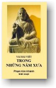
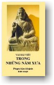

|  |
Vài Bài Viết Trong Những Năm Xưa Phạm Kim
Khánh biên soạn |
 |
|
BuddhaSasana Home Page |
Vietnamese, with Unicode Times font |
|  |
Vài Bài Viết Trong Những Năm Xưa Phạm Kim
Khánh biên soạn |
|
[07] PHẬT GIÁO, DI SẢN TINH THẦN CỦA DÂN TỘC VIỆT NAM Bài đăng trong "Bản Tin Cổ Lâm", số 14, nhân ngày đầu xuân Bính Dần, 1986. X uân lại trở về với chúng ta trên đất khách. Ðây là cơ hội để chúng ta bình tâm ôn duyệt quá khứ và suy gẫm, vạch ra một lối đi cho những ngày vị lai.Chúng ta ra đời và trưởng thành giữa những người thân yêu. Nào cha mẹ, nào anh chị em, nào họ hàng cô bác, nào lối xóm láng giềng, thầy cô, bè bạn v.v... cùng với nếp sống và cảnh vật quen thuộc. Rồi một ngày nọ, và từ đó kẻ trước người sau, chúng ta buộc lòng phải cất bước ra đi, bỏ lại sau lưng tất cả tài sản sự nghiệp, mồ mả ông bà và quê cha đất tổ. Ðó là điều bất hạnh. Tuy nhiên, trong cái rủi lắm khi cũng có cái may. Trong khi phải bỏ lại tất cả thì chúng ta mang theo được nền văn hóa Việt Nam, tinh thần quốc gia Việt Nam và tín ngưỡng cổ truyền của dân tộc Việt Nam. Quả thật là một điều may! Văn hóa, tinh thần quốc gia, và đạo pháp của dân tộc là những bảo vật vô cùng cao đẹp mà chúng ta đã được duyên may thọ nhận từ tay các bậc tiền nhân, các đấng ông bà cha mẹ. Cái gia bảo ấy được tạo nên, không phải từ sáng sớm hôm nay hay trong ngày hôm qua, một sớm một chiều, mà từ nhiều năm, nhiều chục, nhiều trăm, cả mấy ngàn năm, xuyên qua những thăng trầm của lịch sử -- lịch sử oai hùng của một dân tộc anh dũng. Dầu phải trải qua bao nhiêu cơn phong ba bão táp và phải đương đầu với bao nhiêu thử thách, bao nhiêu trở lực, bao nhiên gian lao khổ nhọc, từ thế hệ nầy đến thế hệ khác, tổ tiên chúng ta đã dày công gầy dựng và vun quén đấp bồi, làm cho nền văn hóa dân tộc ngày càng thêm dồi dào phong phú. Ðạo Phật được hoằng khai vào xứ ta ngót hai ngàn năm nay và từ đó, phối hợp với Nho Giáo và Lão Giáo, đã góp phần cương lĩnh lớn lao trong sự phát triển nền văn hóa Việt Nam. Từ ngàn xưa, Phật Giáo đã đi sâu vào lòng người Việt, đã thấm nhuần và dính liền với dân tộc Việt Nam. Cũng như bao nhiêu dân tộc Phật Giáo khác trong toàn cõi Á Ðông, dân tộc Việt Nam đã vươn mình trong tổ ấm của đạo Phật, đã trưởng thành dưới bóng từ bi và trong ánh sáng trí tuệ của Ðức Phật. Ðức Thế Tôn đã nhập diệt. Hơn hai ngàn năm trăm năm đã trôi qua. Nhưng Giáo Pháp đượm nhuần từ bi và trí tuệ của Ngài vẫn còn lưu truyền nguyên vẹn. Từ các triều đại Ðinh, Lê, Lý, Trần và Hậu Lê, nhờ công đức tu học và hoằng pháp của các vị Tổ Sư, các bậc Cao Tăng, như các Ngài Pháp Hiền Thiền Sư, Khuôn Việt Thái Sư, Vạn Hạnh Thiền Sư, Cảm Thành Thiền Sư, Trúc Lâm Tam Tổ, và biết bao các bậc danh tăng khác, giáo huấn của Ðức Phật luôn luôn được nối tiếp chí đến ngày nay. Vậy, bổn phận của chúng ta là phải bảo tồn cái di sản tinh thần mà ta đang thọ hưởng, để rồi trao lại trọn vẹn cho đàn hậu tấn, hàng con em của chúng ta. Và đây không phải là nhiệm vụ riêng tư của một người hay một nhóm người nào mà của tất cả những ai tự xem là Phật tử. Dầu sống tại quê nhà hay trong hoàn cảnh ly hương, chúng ta phải có bổn phận tiếp tục bảo trì nền Phật Giáo nước nhà như một di sản vô giá. Cho đặng viên thành công trình giữ gìn sự nghiệp tinh thần nầy, điều thiết yếu là chúng ta phải cố gắng thực hành giáo lý của Ðức Phật, luôn luôn áp dụng giáo lý ấy vào đời sống hằng ngày. Phật Giáo không phải là một đề tài để tranh luận, không phải là một lý thuyết để bàn cãi suông, cũng không phải là một giáo lý để học hỏi hay nghiên cứu nhằm thỏa mãn trí thức. Giáo Pháp (Dhamma, tức những lời dạy của Ðức Phật) chắc chắn phải được học. Nhưng hơn nữa, Giáo Pháp phải được thực hành. Và trên hết, Giáo Pháp phải được tự mình chứng ngộ. Tu Phật mà không học Giáo Pháp thì cũng như người mù đi trong đêm tối. Nhưng học Giáo Pháp mà không thực hành thì không khác nào người vác đãy kinh sách trên vai, lang thang lạc lối giữa khu rừng mênh mông của đời sống, đầy chong gai và đá nhọn. Ðức Phật dạy: "Dầu thông suốt Kinh, Luật mà không thực hành đúng lời dạy, con người dể duôi ấy tựa hồ như mục đồng, hằng ngày đếm bò, mà bò là của người khác. Người ấy không hưởng được quả vị của đời sống Thiêng Liêng Ðạo Hạnh." (Kinh Pháp Cú, Dhammapada, câu 19) Nói rằng Phật Giáo là một sự nghiệp tinh thần của dân tộc Việt Nam, vậy Phật Giáo là gì? Phật Giáo là một hệ thống triết học và luân lý chủ trương hòa bình, khoan hồng đại độ, và xây dựng trên lý trí. Từ bi và trí tuệ là hai điểm chánh yếu của đạo Phật. Trí tuệ ở đây không phải là sự hiểu biết suông trên bề mặt, cũng không phải hiểu biết xuyên qua sự suy luận hợp lý, hay chỉ hiểu biết trên lý thuyết, mà đây là kết quả của sự gia công áp dụng kiến thức vào bề sâu của đời sống để thấu đạt trọn vẹn và tận tường thực tướng của vạn pháp, thấy sự vật đúng như thật sự sự vật là vậy. Tâm từ trong Phật Giáo là tình thương bao quát đồng đều, vô lượng vô biên, không bờ bến, không biên cương, không hạn định, không có bất luận sự phân biệt nào, cũng không có sự kỳ thị phân chia nào. Giống như ánh sáng mặt trời bao trùm vạn vật, tâm từ êm dịu rải khắp đồng đều những rung động an lành, thấm đều tất cả mọi sanh linh, không từ bỏ một ai. Ðức Phật bủa rộng vừng hào quang từ bi và trí tuệ bao trùm tất cả chúng sanh trong ba giới bốn loài và truyền bá lối sống thanh cao đạo hạnh không những bằng lời dạy vàng ngọc mà cũng bằng gương lành trong sạch. Phật Giáo không đòi hỏi một đức tin mù quáng, không đặt ra những tín điều để bắt buộc con người phải nhắm mắt tin theo. Phật Giáo không dạy những tín ngưỡng dị đoan, không khuyến khích những nghi thức lễ tế thần linh, không nhìn nhận một tha lực nào có quyền ban thưởng hay hành phạt tội phước của con người. Ðối với hàng tín đồ, Ðức Phật chỉ giống như ông thầy sáng suốt, hay một vị lương y giàu lòng bi mẫn. "Các con hãy tự mình gia công cố gắng, các đấng Như Lai chỉ là những đạo sư", là lời dạy của Ðức Phật. Ngài chỉ là người vạch ra con đường và hướng dẫn những ai vui lòng đi theo con đường ấy đến nơi giải thoát riêng rẽ cho cá nhân mình. Người Phật tử xin quy y Phật: "Buddham saranam gacchāmi. Con xin nương tựa nơi Ðức Phật", nhưng làm như vậy không phải để được Ðức Tôn Sư cứu vãn. Dài theo con đường xa xôi diệu vợi, những tấm bảng bên lề có tác dụng chỉ lối đi cho khách lữ hành, nhưng trải qua suốt cuộc hành trình, chính người đi phải tự mình trông chừng từng bước tiến. Bảng chỉ đường chắc chắn sẽ không chở khách đến nơi mong mỏi. Lương y chẩn mạch và kê toa. Nhưng chính bệnh nhân phải tự mình trắc nghiệm xem thuốc có công hiệu không. Cho những ai hoan hỷ nghe theo, Phật Giáo rọi sáng một phương pháp quý báu để tự tạo những tư tưởng thanh cao, tiến đến trạng thái hoàn toàn trong sạch, phát huy trí tuệ tuyệt hảo và sau cùng, giải thoát ra khỏi mọi hình thức khổ đau của những kiếp sinh tồn. Phần chúng ta là phải thực hành, bởi vì "chính ta làm cho ta trong sạch, cũng chính ta làm cho ta ô nhiễm", không ai khác. Phật Giáo đã được hoằng khai rộng rãi, vẫn còn đang mở rộng trên khắp thế giới, và đang ôn hòa thâm nhập vào tất cả các quốc gia, chính vì giá trị cố hữu sẵn có và tính cách tốt đẹp của giáo huấn chớ tuyệt nhiên không phải nhờ sự hỗ trợ của chủ nghĩa đế quốc hay quân phiệt, hoặc một phương tiện cưỡng bách nào khác để đưa người ngoài vào đạo. Cưỡng bách, ngược đãi, hay cuồng tín, không thể có bất cứ vai trò nào trong Phật Giáo. Xuyên qua đoạn đường hơn 2,500 năm dài dẵng không có một ông vua hùng dũng nào đã tung kiếm hoặc múa gươm để truyền bá Phật Giáo, và không có sự cảm hóa bằng võ lực, bằng tiền của, quyền thế hay đường lối áp bức hoặc quyến dụ nào khác. Một học giả người Anh , Giáo Sư Rhys Davids viết: "Trong lịch sử dài dẵng của Phật Giáo xuyên qua nhiều thế kỷ, không có điểm ghi nhận nào mà tôi được biết, đề cập đến người tín đồ Phật Giáo ngược đãi, hành hà những người theo tín ngưỡng khác." Có thể nói rằng trong Phật Giáo có sữa cho trẻ em mà cũng có thức ăn đầy đủ chất dinh dưỡng cho người lớn. Phật Giáo thích hợp với hai giai cấp, nghèo và giàu. Phật Giáo cũng thích hợp với hai hạng người, đại chúng và hàng trí thức. Người kém học hướng về đạo Phật do phần tình cảm nhiệt thành với đạo pháp và phần luân lý bình dị. Người trí thức say mê trong giáo lý thâm diệu và phương pháp trau giồi tâm trí. Một du khách không quen với tập tục của các dân tộc Phật Giáo ắt có cảm nghĩ sai lạc khi bước chân vào chùa lần đầu tiên, ngột ngạt trong đám khói mây của hương trầm, bỡ ngỡ trước những cụ bà tay cầm bó nhang, miệng lẩm bẩm vái van cầu nguyện, và cho rằng Phật Giáo chỉ là những nghi thức lễ bái, là một tôn giáo có tánh cách dị đoan, chứa đựng những hình thức cúng tế sùng bái tượng gỗ và cây cối. Là một tôn giáo khoan hồng, Phật Giáo không phủ nhận hay bác bỏ những hình thức kỉnh mộ bề ngoài ấy vì nó cần thiết cho đại chúng. Ta có thể nhìn thấy phần đông thiện tín thành tâm kính cẩn như thế nào lúc đến chùa tham dự khóa lễ. Do thái độ tôn kính ấy niềm tin nơi Tam Bảo càng tăng trưởng. Khi dâng lễ vật và quỳ lạy một pho tượng bằng đá, bằng gỗ, hay bằng một loại kim khí nào, hoặc một bức hình Phật, người Phật tử chỉ bày tỏ lòng tôn kính ngưỡng mộ của mình đối với lý tưởng siêu việt mà bức tượng ấy biểu hiện. Người Phật tử hiểu biết suy gẫm về những hồng đức của Ðức Thế Tôn và tánh cách vô thường của vạn pháp. Trong khung cảnh trang nghiêm của ngôi Chánh Ðiện, giữa khói hương nghi ngút, những cánh hoa đang héo xào, những cây nhang đang tàn rụi, những ngọn nến đang lụn mòn, gợi cho họ ý niệm về thực chất của kiếp sinh tồn: Có cái chi luôn luôn tồn tại? Có sự kết hợp nào mãi mãi vững bền? Có cuộc sống nào không đi dần đến cái chết? Người Phật tử cũng đảnh lễ cây bồ đề, không phải để tỏ lòng tôn sùng thờ tự cái cây, mà xem đó là tượng trưng của sự giác ngộ. Tượng Phật, cây bồ đề và các hình thức lễ bái không phải tuyệt đối cần thiết, nhưng rất hữu ích vì người đảnh lễ tập trung tư tưởng vào đối tượng thanh cao trong sạch. Dầu sao Ðức Phật không trông chờ hàng tín đồ mãi sống trong nghi lễ, mà trái lại khuyên dạy: "Người thực hành đúng theo giáo huấn của Như Lai là tôn sùng Như Lai nhất." Không ai có thể ban bố giải thoát cho người khác vì người nầy chỉ làm có một việc là van vái khẩn cầu mình. Một cách gián tiếp, người khác có thể đưa đến ta một cánh tay hỗ trợ, nhưng trạng thái siêu thoát cao thượng nhất chỉ có thể thành đạt bằng cách tự mình chứng ngộ Chân Lý, tự mình Giác Ngộ. "Chính con người phải tự mình quyết định kiên trì nỗ lực vươn lên và mở đường đến tận cánh cổng đưa vào tự do. Và bất luận lúc nào, con người luôn luôn có đủ khả năng làm việc ấy. Cánh cổng không bao giờ gài đóng lại. Chìa khóa cũng không bao giờ nằm trong tay ai khác mà ta phải van vái nguyện cầu để được ban bố. Cánh cửa không bao giờ gài, đóng, hay khóa, trừ phi chính con người đã tự tay, gài, đóng, và khóa nó lại." Do kinh nghiệm bản thân, Ðức Phật chứng minh rằng con người có thể thành đạt trí tuệ cao siêu và Ðạo Quả tối thượng, do sự cố gắng của chính mình. Ngài dạy rằng muốn thoát ra khỏi mọi hình thức khổ đau của đời sống chính ta phải tự mình gia công nỗ lực chớ không phải phục tùng, tùy thuộc nơi một thần linh hay một nhân vật nào làm trung gian giữa ta và vị thần linh ấy. Không chủ trương sợ sệt một thần lực huyền bí, Phật Giáo đặt nền tảng trên những sự kiện thực tiễn hằng ngày mà mọi người đều có thể chứng nghiệm và kiểm soát. Tứ Diệu Ðế (bốn chân lý thâm diệu) -- khổ, nguyên nhân sanh khổ, diệt nhân khổ, và con đường diệt khổ -- là phần nồng cốt của Phật Giáo. Ðức Phật xác nhận rằng bản chất của mọi kiếp sinh tồn là đau khổ, trạng thái khổ đau dính liền với mọi cuộc sống. Ngài chỉ rõ rằng nguyên nhân của đau khổ là khát vọng, tham muốn, luyến ái và bám níu vào đời sống, gọi chung là ái dục. Rồi Ngài chứng minh rằng có thể chấm dứt ái dục, và như vậy, có thể chấm dứt đau khổ. Sau cùng Ngài vạch ra con đường để tận diệt ái dục, chấm dứt mọi hình thức đau khổ. Ba Ðế, hay chân lý, đầu tiên -- khổ, nguyên nhân sanh khổ, chấm dứt khổ -- là phần triết lý, quan điểm của Phật Giáo về kiếp nhân sinh. Chân lý thứ tư là phần thực hành, áp dụng triết lý trên vào đời sống hằng ngày. Cũng như vị lương y làm việc có phương pháp, xác nhận có chứng bệnh, tìm phăng lên nguyên nhân của chứng bệnh, tìm hiểu rằng chứng bệnh có thể chữa trị được, và cuối cùng kê toa cho thuốc và chỉ dạy bệnh nhân phải tự chăm sóc như thế nào. Trước mắt Ðức Phật là một chứng bệnh trầm kha của toàn thể chúng sanh trong ba giới bốn loài -- bệnh đau khổ -- và phương thức trị liệu của Ngài đã chứng tỏ có khả năng diệt trừ chứng bệnh tận gốc rễ. Vì lẽ ấy Ngài cũng được tôn là Tối Thượng Y Vương. Khi đề cập mạnh mẽ đến đau khổ, Phật Giáo có phải là một giáo lý bi quan không? Ta có thể gán cho Ðức Phật nhãn hiệu yểm thế không? Trên thực tế, Phật Giáo không bi quan cũng không lạc quan, mà chỉ trình bày một quan điểm thực tiễn về đời sống. Giáo lý của Ðức Phật là một thông điệp phát huy niềm hân hoan và hy vọng chớ không phải là một triết lý bi quan chủ bại. Có lời phê bình vội vã cho rằng Phật Giáo là một tôn giáo tiêu cực và thụ động. Lời chỉ trích vô căn cứ ấy vẫn còn xa sự thật. Ðức Phật là nhà truyền giáo đầu tiên hoạt động tích cực nhất trong lịch sử nhân loại. Trải qua bốn mươi lăm năm trường Ngài đi từ nơi nầy đến nơi khác để hoằng dương Giáo Pháp, cho đến giờ phút cuối cùng, di huấn tối hậu của Ngài là: "Hãy liên tục và kiên trì nỗ lực." Tất cả những lời dạy của Ðức Phật được tôn trí vào ba tạng: Luật, Kinh, và Luận. Tạng Luật bao hàm những gì không nên làm, được tóm tắt trong câu, "không làm ác" (chư ác mạc tác), tức không làm cho mình trở thành một tội khổ cho mình và cho kẻ khác. Tạng Kinh được tóm tắt là "hành thiện" (chúng thiện phụng hành), tức trở thành một phước lành cho mình và cho kẻ khác. Và lời kêu gọi cuối cùng, "thanh lọc tâm" (tự tịnh kỳ ý) thật vô cùng quan trọng và cực kỳ thiết yếu. Hiểu theo một lối, mỗi người Phật tử phải là một chiến sĩ can đảm, bền gan kiên dạ và bất khuất. Họ chiến đấu, nhưng không phải bằng cách thả bom nhả đạn. Họ giết chóc. Nhưng không phải giết những người đàn ông, đàn bà hay trẻ con vô tội. Họ chỉ chiến đấu chống với chính bản thân họ. Bởi vì con người là kẻ thù tệ hại nhất của con người. Tâm là người bạn tốt mà cũng là địch thủ nguy hiểm nhất. Không chút xót thương, người Phật tử tàn sát và tận diệt những khát vọng tham ái, sân hận và si mê trong tâm họ bằng võ khí Giới, Ðịnh, Tuệ. Một đặc điểm khác của giáo huấn mà Ðức Phật ban truyền là Nghiệp Báo và Tái Sanh. Lý Nghiệp Báo là định luật nhân quả trong lãnh vực tinh thần đạo đức. Tái Sanh là hệ luận của Nghiệp Báo, và hai giáo lý căn bản nầy liên quan với nhau rất mật thiết. Theo luật nhân quả, gieo giống nào thì gặt giống nấy. Lý Nghiệp Báo dạy rằng trong hành động -- bằng thân, khẩu, hay ý -- đã có tiềm tàng năng lực tạo quả, cũng như trong hột đã có tiềm lực tạo nên cây và sanh ra trái, quả sẽ trổ lúc nầy, nơi nầy hay lúc khác nơi khác, ở kiếp hiện tại hay trong tương lai. Ngày hôm nay ta gặt hái những gì chính ta đã gieo trong hiện tại hay quá khứ, và trong tương lai ta sẽ như thế nào do nơi hành động của ta trong hiện tại và quá khứ như thế nào. Nghiệp Báo không phải là một hình thức thưởng hay phạt mà là một sự biến chuyển tự nhiên từ nhân đến quả, từ hành động (kamma, hay nghiệp) đến phản ứng của hành động (vipāka, quả). Lý Nghiệp Báo đem lại cho người Phật tử sự an ủi, niềm hy vọng, chỗ nương tựa, và sự khích lệ tinh thần, để can đảm vững bước trên đường tiến bộ. Khi có việc bất trắc không may xảy đến, khi gặp trở ngại khó khăn, thất bại và hoàn cảnh bất hạnh, người Phật tử nhận định rằng mình đang gặt hái giống nào mà trước kia chính mình đã gieo, mình đang trang trải một món nợ đã vay trong quá khứ. Tuy nhiên, thay vì đành bó tay chịu đầu hàng hoàn cảnh để cho định luật Nghiệp Báo tự nhiên diễn tiến, người Phật tử tận lực cố gắng diệt trừ cội rễ giống cỏ xấu và gieo trồng những giống cỏ lợi ích. Bởi vì người Phật tử chân chánh hiểu biết rằng tương lai nằm hoàn toàn trong chính tay mình. Ta tạo địa ngục cho ta, do hành động của chính ta. Cũng do hành động của chính ta, ta tạo thiên đàng cho ta. Kinh Samyutta Nikāya, Tạp A Hàm, dạy: "Ðã gieo giống nào sẽ gặt quả nấy, Hành thiện sẽ thâu gặt quả lành; hành ác gặt quả dữ. Hãy gieo giống tốt, ta sẽ hưởng quả lành." (Phần I, trang 293) Một người Phật tử thuần thành và hiểu biết chắc chắn lý Nghiệp Báo không hề van vái cầu xin được cứu rỗi, trái lại đặt trọn vẹn niềm tin nơi chính mình, nơi sự nỗ lực cố gắng của chính mình để được giải thoát. Thay vì tự bó tay đầu hàng hay vuốt ve tâng bóc một thần lực siêu thế nào, người Phật tử vững tâm tin tưởng nơi ý chí của mình và không ngừng hoạt động để tạo an lành cho tất cả. Niềm tin nơi lý Nghiệp Báo nâng cao giá trị của hạnh tinh tấn nỗ lực và kích thích lòng nhiệt thành vì mỗi người phải lãnh lấy trách nhiệm về hành động của mình. Ðối với người Phật tử sơ cơ, lý Nghiệp Báo là một điều răn. Ðối với hàng trí thức, lý Nghiệp Báo là một khích lệ và giải thích vấn đề đau khổ, giải thích những bí ẩn của cái được gọi là số mạng và tiền định của một vài hệ thống tín ngưỡng, và trên hết, giải thích tình trạng chênh lệch giữa người và người. Tái Sanh nối tiếp theo Nghiệp Báo. Chính Nghiệp là cái "hợp thành lực" của mọi hành động -- bằng thân, khẩu, ý -- tạo điều kiện cho tái sanh. Nghiệp trong những kiếp quá khứ tạo duyên đưa đến kiếp sống hiện tại. Hiện nghiệp phối hợp với tiền nghiệp tạo duyên đưa đến kiếp sống vị lai. Hiện tại là con đẻ của quá khứ và trở thành mẹ sinh ra vị lai. Ta không nên lẫn lộn giáo lý Tái Sanh của Phật Giáo với thuyết chuyển sinh linh hồn (thường được gọi là đầu thai) của một vài hệ thống tín ngưỡng khác, bởi vì Phật Giáo không nhìn nhận có sự chuyển sinh của một linh hồn, xem như một thực thể đơn thuần, nguyên vẹn, trường tồn, và không biến đổi, do một thần linh tạo ra hay phát xuất từ một Ðại Hồn (Paramatma). Thay vì chủ trương có một linh hồn trường cửu, Phật Giáo chỉ nhìn nhận có sự diễn tiến của nghiệp lực, hoặc một luồng trôi chảy liên tục nối tiếp của những hiện tượng "tâm-vật-lý". Chúng ta là vị kiến trúc sư xây đắp cuộc sống tương lai của ta. Chính tư tưởng, lời nói và hành động là nghiệp. Và chính nghiệp đưa ta lên hay xuống, từ kiếp nầy sang kiếp khác, mãi mãi trong vòng luân hồi. Ðức Phật dạy: "Phước báu và tội lỗi mà con người tạo là tất cả những gì mà con người làm chủ, là những gì đưa con người đi từ nơi nầy ..., là những gì theo bén gót con người như bóng theo hình. Vậy từ đây con người hãy tích trữ những nghiệp tốt để đem đi nơi khác trong tương lai. Hãy tạo một nền tảng vững chắc cho thế gian ngày mai." Ðó là Giáo Pháp, những lời dạy vàng ngọc của Ðức Bổn Sư, là sự nghiệp tinh thần của dân tộc, di sản vô giá mà tổ tiên đã trao truyền và chúng ta đang thừa hưởng. Nếu hành theo đúng lời dạy chắc chắn chúng ta sẽ tạo nhiều thiện nghiệp. Ông bà cha mẹ có thể để lại cho chúng ta tiền của ruộng nương, hay vòng vàng châu báu. Ta gọi đó là của thừa tự, là của mình. Tuy nhiên, dầu ta có cố bám chắc và tận lực gìn giữ đến đâu, nó chỉ ở với ta một cách tạm thời. Bao nhiêu yếu tố như hỏa hoạn, bão lụt, trộm cướp, kẻ thù nghịch, chiến tranh v.v... và cuối cùng cái chết phải đến, luôn luôn sẵn sàng tước đoạt quyền làm chủ của ta. Chỉ có cái nghiệp -- thiện hoặc bất thiện -- sẽ theo dính liền với ta, và chỉ có nghiệp lành mới phục vụ và nâng đỡ ta như người bạn chí thân. "... Người hành thiện đi từ thế gian nầy đến thế gian kế, được hành động thiện của mình đón rước như người thân thuộc từ phương xa trở về." (Dhammapada, Kinh Pháp Cú, câu 220). Ngài Nārada dạy rằng, "Có những quốc gia nổi lên rồi suy tàn. Có những đế quốc, xây dựng trên bạo lực và cường quyền, đã phồn thịnh cực độ rồi tan rã. Nhưng vương quốc của Pháp Bảo, kiến tạo bằng từ bi và trí tuệ, đến nay vẫn còn thịnh vượng, và sẽ còn thịnh vượng ngày nào mà người Phật tử còn biết giữ gìn những quy tắc cao cả của Giáo Pháp." Nhân ngày đầu năm, xin ước nguyện hàng Phật tử Việt Nam chúng ta hãy thành tâm cố gắng thu xếp nếp sống trong khuôn khổ kỷ cương của Giáo Pháp. Nam Mô Bổn Sư Thích Ca Mâu Ni Phật. -ooOoo- [08] LÀM LÀNH, LÁNH DỮ Bài đăng trong "Bản Tin Cổ Lâm", số 13, năm 1985 T a thường nghe nói, "Lúc nào tôi cũng ăn hiền ở lành, và như vậy là đủ rồi, không cần phải theo tôn giáo nào vì đạo nào cũng dạy làm lành lánh dữ". Chí lý thay!Nhưng rồi ta lại nghĩ, "Thế nào gọi là lành, và thế nào là dữ? Nói cách khác, lấy cái chi làm tiêu chuẩn đo lường để xác quyết rằng hành động nào là "lành" và hành động nào là "dữ". Theo Phật Giáo, một cách vắn tắt, tất cả những hành động bắt nguồn từ tham, sân, si, đều được xem là bất thiện, và tất cả những hành động nào bắt nguồn từ không-tham, không-sân, không-si đều được xem là thiện. Bài kinh Sangiti Sutta, số 33, của bộ Dīgha Nikāya (Trường A Hàm) có câu: "Có ba căn bất thiện là: tham, sân, si. Và có ba căn thiện là: không-tham, không-sân, không-si." Bài nầy nhằm tìm hiểu: 1) Thế nào là "căn". Sao là "căn
bất thiện", và sao là "căn thiện". * * * 1. "Căn Thiện" và "Căn Bất Thiện" Danh từ "căn" được phiên dịch từ Phạn ngữ "mūla", có nghĩa là rễ cây, và hiểu rộng là cội rễ, nguồn cội, căn nguyên phát xuất. Theo tinh thần Bản Chú Giải, mūla, hay "căn" là sự nâng đỡ vững chắc, hay nền tảng kiên cố, là nguyên nhân, điều kiện làm phát sanh. Theo nghĩa bóng của danh từ cũng có thể hiểu đó là một thứ nhựa, như nhựa cây, có đặc tính nuôi sống cội cây, căn thiện hay bất thiện nuôi sống các trạng thái tâm đồng phát sanh, và cũng là nhựa sống dưỡng nuôi các hành động xuất phát từ những "căn" ấy. Một cách giản dị, ta có thể hiểu "căn" là nguyên nhân tạo điều kiện đưa đến hành động -- thiện hay bất thiện -- và cũng là những trạng thái tâm đứng phía sau các hành động ấy. Danh từ "thiện" được phiên dịch từ Phạn ngữ "kusala". Về ý nghĩa bao quát của Phạn ngữ nầy, sách Atthasālini giải thích là khỏe mạnh (āroya), là vô tội về phương diện đạo đức (anavajja), và có khả năng tạo quả thuận lợi, an vui, hạnh phúc (sukhā vipāka). Như vậy: - "Thiện", kusala, là tinh khiết, khỏe mạnh, hiểu theo nghĩa không mang những chứng bệnh - vật chất hay tinh thần - do dục vọng gây nên. - "Thiện", kusala, là vô tội, hiểu theo nghĩa không bị dục vọng đẩy đưa đến việc gây tội, tạo ác nghiệp. - "Thiện", kusala, có khả năng tạo quả an vui, hạnh phúc. Tức trạng thái dịu dàng, thoải mái, tiện nghi, thơ thới - cả vật chất lẫn tinh thần. Xét theo những ý nghĩa khác nhau của hai chữ "căn" và "thiện", có thể hiểu rằng "thiện căn" (kusala mūla) là nguồn cội, căn nguyên xuất phát, trong sạch, tinh khiết, là nguyên nhân có tánh chất tạo quả an vui hạnh phúc. Và những hành động nào - biểu hiện bằng thân, khẩu, hay ý - bắt nguồn từ thiện căn, sẽ tạo thiện nghiệp, đưa đến hậu quả an vui, đáng được ưa thích. Ngược lại, "bất thiện căn" (akusala mūla) là nguồn cội bất tịnh, không tinh khiết, là nguyên nhân có tánh chất tạo quả đau khổ. Và những hành động nào - biểu hiện bằng thân, khẩu hay ý - bắt nguồn từ bất thiện căn sẽ tạo nghiệp bất thiện, đưa đến hậu quả đau khổ, không đáng được ưa thích. 2. Tham, Sân, Si và Không-Tham, Không-Sân, Không-Si Ba "căn bất thiện" là tham, sân, si. "Tham" được phiên dịch từ Phạn ngữ "lobha", và chữ nầy xuất nguyên từ căn "lubh", có nghĩa là bám chặt vào, hay cột lại. Hiểu rộng là luyến ái, bám níu, đeo dính theo. Hiểu theo Vi Diệu Pháp (Abhidhamma) "tham" là một tâm sở sâu kín ngủ ngầm dai dẳng bên trong chúng sanh, làm cho chúng sanh luôn luôn tự cảm thấy thiếu thốn, cần phải có, khát khao thèm muốn, và tìm phương thế tự thỏa mãn một cách bền lâu. Người tham luôn luôn muốn đem vào và bám chặt vào điều mình muốn, không bao giờ biết đủ. Lòng tham không đáy, không thể được thỏa mãn hoàn toàn. "Sân" được phiên dịch từ chữ "dosa", hay chữ "patigha". "Dosa" xuất nguyên từ căn "dus", có nghĩa là không bằng lòng, không thỏa mãn, không vừa ý, bất toại nguyện. "Patigha" do căn "pati", là chống lại, và "gha" chạm vào, đụng chạm, tiếp xúc. Danh từ nầy bao gồm những ý nghĩa ác ý, thù hận, oán ghét, bất toại nguyện, ở nhiều mức độ khác nhau, từ những hình thức sân hận thô kịch đến những bất mãn vi tế nhất. Thí dụ như tâm sân có thể phát sanh khi quyền lợi riêng tư của mình bị mất mát, hoặc tự ái của mình bị đụng chạm (hình thức thô kịch, hiển nhiên), nhưng cũng có những xúc cảm bất toại nguyện ẩn núp, biểu hiện dưới hình thức tiêu cực như buồn bã, chán nản, thất vọng, phiền muộn, lo âu v.v... trước thực chất vô thường, bất ổn định, bất an toàn của mọi kiếp sinh tồn. "Si" được phiên dịch từ "moha", một Phạn ngữ xuất nguyên từ căn "muh", có nghĩa lầm lạc, ảo tưởng, hiểu biết sai lầm. Chính "si mê" bao trùm đối tượng như một đám mây và làm cho chúng sanh không thấy rõ thực tướng của sự vật. Ðây là một trạng thái tâm lý mù mờ, hoang mang, như người trong bóng tối mập mờ nhìn thấy sợi dây ngỡ là con rắn. Vì mê muội, không nhận thức được thực tướng của sự vật nên con người lầm lạc khư khư cố chấp ngũ uẩn là "bản ngã", "cái ta" của mình, là "chính mình". Và từ đó, điều gì vừa lòng "cái ta" ấy thì ưa thích, thèm muốn, khát khao cố đem vào càng nhiều càng tốt, và khi được rồi thì bám vào, càng chặt chẽ càng hay. Trái lại, điều nghịch ý "cái ta" ấy thì phật lòng, bất toại nguyện, cố xua đuổi ra xa. Con người luôn luôn đứng trước sự lựa chọn -- thích và không thích. Thích thì khát khao luyến ái, bám níu, tức tham. Không thích thì bất mãn, không vừa lòng, giận dữ, cố đẩy lui ra xa, tức sân. Chính tham cũng là nguyên nhân đưa đến sân. Ðiều mong muốn mà không được toại nguyện, điều ưa thích, đã được rồi, lại mất đi, vật hay người ngăn cản hoặc cạnh tranh, không cho thành tựu tham vọng, tất cả đều là những trường hợp làm phát sanh tâm sân. Con người chẳng những chỉ có lòng tham ái duyên theo nhục dục ngũ trần mà còn tham quyền thế, địa vị, danh vọng, tham lấn áp người khác v.v... và lòng tham mà không được thỏa mãn sẽ đưa đến phiền não, âu sầu, tuyệt vọng, thèm khát, ganh tỵ v.v... Tất cả những trạng thái ấy đều thuộc về tâm sân, hiểu theo nghĩa của danh từ patigha -- mong muốn theo một chiều mà sự việc xảy ra theo chiều ngược lại, hoặc cản ngăn, chống lại. Si mê làm cho con người mù quáng, và do sự mù quáng ấy không nhận chân được hiểm họa vô cùng tai hại trong khi chạy theo dục vọng, cũng như không nhận chân được thế nào là phúc lợi thật sự của mình. Con người văn minh tân tiến của thời hiện đại tự hào đã chế ngự được thiên nhiên và đem lại nhiều tiện nghi vật chất cho đời sống, nhưng về phương diện tinh thần đạo đức, con người thế gian còn là những con bệnh ươn yếu, luôn luôn bị đẩy đi, kéo về, nghiêng ngửa bên trong cái tâm mà họ không thể kiểm soát. Không ngừng bị lòng tham kéo tới, rồi tâm sân đẩy lui, nhưng trong trạng thái mù quáng con người không hiểu biết rằng cái "thắng" để kềm hảm, hay làm dừng hẳn các năng lực tâm linh ô nhiễm ấy, vẫn nằm trong tầm tay và trong phạm vi khả dĩ của tâm trí mình. Ðối nghịch với ba căn bất thiện -- tham, sân, si -- có ba căn thiện là không-tham, không-sân và không-si. Tuy được gọi bằng những danh từ tiêu cực, nhưng ba căn nầy cũng bao gồm luôn những sắc thái hoàn toàn tích cực. "Không-tham" bao hàm ý nghĩa vị tha bất cầu lợi, rộng lượng, quảng đại, tâm dứt bỏ, từ khước, không luyến ái, không bám níu dính mắc hay cố đem vào. Không-tham cũng là có những tư tưởng, lời nói, hay việc làm có tánh cách hy sinh, hay sẵn sàng chia xẻ với người khác. "Không-sân" có nghĩa từ ái, hảo tâm, thiện ý, lòng bi mẫn, ưu ái, tình giao hảo thuận hòa, đức khoan dung tha thứ, không gắt gỏng, không gây phiền muộn mà sống với mọi chúng sanh trong tình huynh đệ tương thân tương ái. "Không-si" là minh mẫn sáng suốt, hiểu biết rộng rãi, tri kiến chân chánh, trí tuệ minh sát rõ ràng -- tức sự vật như thế nào thì nhận thấy và hiểu biết sự vật đúng như thế ấy -- bản chất của đời sống là vô thường, khổ, và vô ngã thì thấy đúng là vậy, không lầm tưởng là thường, lạc, và hữu ngã. Không-si cũng là trí phân biện minh bạch, tâm quân bình. 3. Ðịnh Nghĩa Của Sáu Căn Theo Bản Chú Giải Theo sách Thanh Tịnh Ðạo (Visuddhi Magga): "Tham" có đặc tánh bám vào một vật, giống như thứ nhựa mà người ta trét vào cây rồi nhử chim chóc đến đậu trên đó. Chim dính kẹt chân trong nhựa, không bay đi được (theo nguyên văn là thứ nhựa để bắt khỉ). Tác dụng của tham là làm dính, giống như miếng thịt sống đặt trên một cái chảo thật nóng. Biểu hiện của tham là bám chặt không rời bỏ, như thuốc nhuộm tốt -- nhúng vào là dính liền, không bay màu. Nguyên nhân gần là cảm thấy thỏa thích trong những gì (dục vọng) đưa đến sự trói buộc (vào vòng luân hồi). Ðẩy mạnh dòng nước dục vọng, lòng tham ái phải được xem là cái gì lôi cuốn chúng sanh đến những cảnh khổ, như dòng nước lũ cuồn cuộn kéo ra biển cả. "Sân" có đặc tánh hung tợn, dữ dằn, giống như con rắn bị khiêu khích. Tác dụng của sân là lan tràn, giống như những giọt thuốc độc (chạy khắp trong cơ thể), hoặc nữa cũng giống như ngọn lửa, bốc cháy luôn cả mình, như đám rừng cháy (nổi giận phừng phừng, tự thiêu đốt luôn lấy mình). Biểu hiện của sân là sát hại (hay làm tổn thương người khác), giống như kẻ thù được thắng thế. Nguyên nhân gần của sân là duyên cớ để bực mình. Sân phải được xem như nước tiểu pha với thuốc độc (làm cho thuốc độc chạy mau cùng khắp trong cơ thể - vào thời xưa người ta dùng nước tiểu để dẫn thuốc, tức uống thuốc pha trong nước tiểu để giúp cho thuốc thấm mau.) "Si" có đặc tánh là mù quáng, hoặc không hiểu biết. Tác dụng của si là không thấm nhuần, hoặc không thấu hiểu bản chất thật sự của một vật. Biểu hiện của si là không có quan kiến chân chánh (tức không thấu đạt Tứ Ðế), hoặc biểu hiện của si là đen tối. Nguyên nhân gần của si là sự chú tâm không chánh đáng. Si phải được xem là căn nguyên đưa đến tất cả những gì bất thiện. "Không-tham" có đặc tánh là không có ý muốn một vật, hoặc không dính mắc, giống như giọt nước nhểu trên lá sen. Tác dụng của không-tham là không chiếm hữu (không nắm giữ làm của riêng), giống như vị tỳ khưu siêu thoát. Biểu hiện của không-tham là không cố ý bám vào, giống như người té trên đống rác (không muốn đồ dơ dính vào mình). "Không-sân" có đặc tánh là không gắt gỏng, hoặc không chống đối, giống như người bạn lành. Tác dụng của không-sân là tiêu trừ trạng thái phiền toái hay nóng giận, như gỗ trầm (có mùi thơm dễ chịu). Biểu hiện của không-sân là dễ mến, dịu dàng giống như ánh trăng ngày rằm. "Không-si" có đặc tánh thấu đạt thực tướng của sự vật, hoặc hiểu biết sâu vào bên trong sự vật một cách vững chắc, giống như mũi tên của người thiện xạ. Tác dụng của không-si là làm sáng tỏ đối tượng giống như ngọn đèn. Biểu hiện của không-si là không hoang mang, giống như người hướng đạo thuần thục (hiểu biết nằm lòng đường đi nước bước và chỗ nào có gì). Về bản chất của sáu căn, sách Atthasālini có nêu lên những điểm như sau: ... Do không-tham, sầu muộn không phát sanh khi xa cách người thân yêu, vì trìu mến là bản chất cố hữu của người tham. Không chịu đựng nổi hoàn cảnh xa cách người thân kẻ yêu cũng là bản chất của người tham. Do không-sân, sầu muộn không phát sanh khi sống chung với người mình không ưa thích, vì trạng thái bất toại nguyện là bản chất cố hữu của người sân. Không thể chịu đựng cuộc sống chung với người không ưa thích cũng là bản chất của người sân. Do không-si, sầu muộn không phát sanh khi không thành đạt điều mong muốn, vì bản chất cố hữu của người si mê là tự hỏi, "ở đâu ta có thể thành đạt điều ấy? v.v..." Do "không-tham", phiền não vì tái sanh không khởi phát, bởi vì không-tham là phản nghĩa của ái dục, và phiền não vì tái sanh là nguyên nhân của ái dục (do ái dục, muốn được tái sanh và lo sợ sẽ không tái sanh. Không ái dục là không còn mong muốn tái sanh, do đó không còn lo sợ sẽ không tái sanh). Do không-sân, phiền não vì tuổi già không phát sanh, bởi vì người có tánh sân hận mau già. Do không-si, phiền não về sự chết không phát sanh, bởi vì người hiểu biết lầm lạc thấy cái chết là thật sự đau khổ. Người không-si nhìn cái chết dưới ánh sáng của ba đặc tướng vô thường, khổ, vô ngã. Hàng cư sĩ tại gia sống thuận hòa với nhau nhờ không-tham, bậc xuất gia nhờ không-si, và tất cả mọi người sống với nhau thuận hòa nhờ không-sân. Ðặc biệt nhờ không-tham, không tái sanh vào cảnh giới ngạ quỉ, vì thông thường chúng sanh bị sa đọa vào cảnh giới nầy do ái dục, không-tham đối nghịch với ái dục. Nhờ không-sân không tái sanh vào địa ngục (niraya, khổ cảnh) vì sân hận, tức bản chất quạu quọ, gắt gỏng, đưa chúng sanh vào khổ cảnh, cảnh giới thích hợp với tâm sân. Không-sân đối nghịch với sân. Nhờ không-si, không tái sanh vào cảnh thú vì do si mê lầm lạc chúng sanh tái sanh vào cảnh thú. Không-si đối nghịch với si mê. Trong ba đức tánh, "không-tham" thúc giục ra khỏi năng lực thu hút của tham ái. Không-sân, ra khỏi năng lực của sân hận. Không-si, ra khỏi trạng thái lơ đễnh, hoang mang vì si mê. Hơn nữa, do ba đức tánh trên, phát sanh những ý niệm tương xứng: ý niệm về sự từ khước (ly dục), không gây tổn hại, ý niệm về sự ghê tởm (trạng thái ô trược của cơ thể vật chất), ý niệm về tính cách vô lượng của bốn loại tâm cao thượng, từ, bi, hỷ, xả. và ý niệm về các nguyên tố căn bản của vật chất (sắc). Do không-tham, lánh xa cực đoan lợi dưỡng. Do không-sân lánh xa cực đoan khổ hạnh. Do không-si, có công trình tu luyện chân chánh theo con đường "Trung Ðạo". Do không-tham dứt bỏ dây tham ái liên quan đến thân (abhijjha kāya gantha). Do không-sân dứt bỏ dây trói buộc thù hận. Do không-si dứt bỏ hai dây trói buộc còn lại, tức tin theo nghi lễ cúng tế thần linh, và độc đoán tin chỉ có cái nầy là chân lý. (Nơi đây danh từ gantha, dây trói buộc, hàm ý là trạng thái cột dính liền thân và tâm, hoặc thân hiện tại và thân trong tương lai) Nhờ không-tham và không-sân, có thể thành công trong hai chi đầu của Tứ Niệm Xứ (Niệm Thân và Niệm Thọ). Nhờ không-si có thể thành công trong hai chi sau (Niệm Tâm và Niệm Pháp). Không-tham là điều kiện đưa đến sức khỏe, vì người không tham không duyên theo cái gì không thích nghi với mình mặc dầu cái đó có sức hấp dẫn, mà chỉ làm những điều thích nghi, do đó được có sức khỏe. Không-sân là điều kiện để giữ mình được trẻ trung, vì người không sân không bị lửa sân thiêu đốt, làm nhăn da bạc tóc. Không-si là điều kiện đưa đến tuổi thọ cao, vì người không si mê lầm lạc phân biệt điều gì thích hợp với mình và điều gì không thích hợp, và làm những điều thích hợp, do đó được trường thọ. Không-tham là điều kiện đưa đến hoàn cảnh giàu có. Do lòng quảng đại phát tâm bố thí (tạo thiện nghiệp), do đó, quả trổ sanh là thâu thập tài sản sự nghiệp. Không-sân là điều kiện đưa đến có nhiều bạn bè, vì nhờ tâm từ, có thêm bạn mà không mất. Không-si tạo duyên đưa đến những thành tựu cá nhân (tự phát triển) vì người không si mê chỉ làm những điều lợi ích cho mình, biết tự điều chế. Không-tham đưa đến đời sống ở các cảnh Trời. Không-sân đưa vào đời sống ở cảnh Phạm Thiên. Không-si đưa đến đời sống của các bậc Thánh Nhân (Tu Ðà Huờn, Tư Ðà Hàm, A Na Hàm, A La Hán). Do không-tham, sống an lành giữa những người và vật thuộc phe nhóm mình, với tài sản thâu thập, vì không trìu mến nên không sầu muộn khi những người hay vật ấy hoại diệt. Do không-sân, sống an vui giữa người và vật thuộc phe nhóm khác, vì người không sân không chứa chấp tình cảm bất thân thiện, dầu sống giữa kẻ thù nghịch. Do không-si, sống an vui giữa những người không thuộc phe nhóm nào, vì người không si mê đã dứt bỏ mọi luyến ái. Do không-tham thành tựu tuệ minh sát, chứng ngộ lý vô thường, vì người tham ái bị lòng khát khao thọ hưởng che lấp, không thấy đặc tướng vô thường trong những sự vật vô thường. Do không-sân thành tựu tuệ minh sát, chứng ngộ lý đau khổ, vì người có bẩm tánh từ ái đã dứt bỏ mọi cố chấp, và chấp ngã là nguyên nhân phát sanh mọi hình thức đau khổ. Vì đã thấu hiểu những phiền não do các nguyên nhân ấy tạo duyên nên dứt bỏ. Do đó, người không sân nhận thức sâu sắc rằng thực tướng của vạn pháp là đau khổ. Do không-si có tuệ minh sát về lý vô ngã, vì người không si mê khéo thấu đạt chân tướng của vạn pháp, chứng ngộ tỏ tường rằng ngũ uẩn là vô ngã. Cũng như tuệ minh sát về lý vô thường v.v... được chứng ngộ nhờ ba trạng thái trên, cũng cùng một thế ấy, ba trạng thái trên (không-tham, không-sân, không-si) cũng được chứng ngộ nhờ tuệ minh sát về lý vô thường v.v... Do tuệ minh sát về lý vô thường có không-tham. Do tuệ minh sát về lý đau khổ có không-sân. Do tuệ minh sát về lý vô ngã, có không-si. Quả thật vậy, người đã thấu hiểu rằng cái nầy là vô thường thì có còn phát triển lòng khát khao ham muốn cái nầy nữa không? Người đã nhận thức rõ ràng đặc tướng đau khổ của sự vật có còn phát triển cái khổ khác do lòng sân hận quá độ không? Người đã thấu đạt tánh cách rỗng không của cái gọi là "linh hồn" có còn rơi trở lại vào ảo tưởng hiển nhiên ấy không? 4. Bất Thiện Nghiệp và Thiện Nghiệp Những hành động cố ý phát xuất từ sáu căn: tham, sân, si và không-tham, không-sân, không-si, được gọi là nghiệp, thiện hay bất thiện. Những việc làm hay lời nói có chủ ý -- tức thân hay khẩu nghiệp -- bắt nguồn từ ba căn bất thiện, có tánh cách gây tổn hại cho người khác là bất thiện, về phương diện xã hội cũng như về phương diện đạo đức. Theo Phật Giáo, đó là "thân bất thiện nghiệp" và "khẩu bất thiện nghiệp". Những tư tưởng xuất nguyên từ ba căn bất thiện -- muốn làm tổn thương, hay muốn sát hại sinh vật, muốn trộm cắp, muốn tà dâm v.v... -- tuy không biểu hiện ra ngoài bằng hành động hay lời nói, nhưng về phương diện cá nhân, vẫn tạo "ý bất thiện nghiệp". Vì lẽ ấy, trong các bài kinh ta thường thấy Ðức Phật dạy rằng khi có một tư tưởng phát sanh, ta nên suy nghiệm xem tư tưởng nầy "có đưa đến việc làm tổn thương chính ta, tổn thương người khác, hoặc tổn thương chính ta và người khác" hay không. Nên ghi nhận rằng mỗi vế trong câu nầy đều có ý nghĩa rõ ràng và đầy đủ. Khi nảy sanh một ý tưởng bất thiện mà không diễn đạt ý tưởng ấy ra hành động hay lời nói, người kia chỉ tạo "ý bất thiện nghiệp". Nghiệp nầy chỉ gieo ảnh hưởng đến đương sự. Ðiều nầy giải thích vế đầu: "chỉ làm tổn thương chính ta". Khi vô tình gây tai hại cho người thì chỉ "làm tổn thương người," vì không cố ý nên không tạo nghiệp bất thiện, và như vậy không làm tổn thương chính mình. Khi cố ý làm hại người, hay cố tình xúi giục người khác hành động bất thiện - bằng thân, khẩu, ý - thì cả chính ta lẫn người khác đều bị tổn thương. Mặc dầu các căn thiện và bất thiện là những trạng thái tâm hoàn toàn thuộc về cá nhân, nhưng ảnh hưởng của nó trong đời sống xã hội thật là sâu rộng và vô cùng quan trọng. Con người là một phần tử của xã hội, và như vậy lòng tham, sân, si của những người sống quanh ta luôn luôn có chiều hướng nhắm vào bản thân, vào tài sản, vào tình trạng an toàn, tự do, vào tất cả những gì thân yêu quý trọng nhất của ta. Rồi tham, sân, si của chính ta quày ngược trở lại người khác, mặc dầu có thể ta không hay biết, hoặc không màng quan tâm đến. Bao nhiêu ảnh hưởng đẩy qua, đưa lại, chằng chịt hết gây đau khổ cho người đến bị người làm đau khổ, không biết bao giờ chấm dứt. Do đó Ðức Thế Tôn thường dạy rằng những căn bất thiện làm khổ người cũng như làm khổ cho chính ta. Cùng một luận lý như trên, những căn thiện là nguồn phước lành mà cả xã hội lẫn cá nhân đều thừa hưởng. Trong bộ Majjhima Nikāya (Trung A Hàm), phẩm Mulāpariyaya Vagga, bài kinh số 9, Kinh Chánh Kiến (Samāditthi Sutta) có đoạn như sau: "Khi vị đệ tử của bậc Thánh Nhân thấu đạt thế nào là bất thiện nghiệp và bất thiện căn, thấu đạt thiện nghiệp và thiện căn, thì vị ấy được xem là có Chánh Kiến, là có quan kiến chân chánh, là có niềm tin vững chắc nơi Tam Bảo, là người đã thật sự bước vào Chánh Pháp." Thế nào là bất thiện nghiệp? * Sát hại, hay làm tổn thương sinh vật là bất thiện nghiệp; lấy của không được cho đến mình là bất thiện nghiệp; tà hạnh là bất thiện nghiệp; * Nói gian dối là bất thiện nghiệp; nói đâm thọc là bất thiện nghiệp; nói thô lỗ cộc cằn là bất thiện nghiệp; nói nhảm nhí vô ích là bất thiện nghiệp; * Có những tư tưởng tham lam là bất thiện nghiệp; có những tư tưởng sân hận là bất thiện nghiệp, có những tư tưởng tà kiến là bất thiện nghiệp. Thế nào là bất thiện căn? -- Tham là bất thiện căn, sân là bất thiện căn, si là bất thiện căn. Thế nào là thiện nghiệp? * Lánh xa những hành động sát hại hay làm tổn thương sinh vật, hành động trộm cắp, hành động có tánh cách tà dâm là thiện nghiệp; * Lánh xa những lời nói giả dối, những lời đâm thọc, những lời thô lỗ cộc cằn, những lời nhảm nhí vô ích là thiện nghiệp; * Lánh xa những tư tưởng tham lam, sân hận, và tà kiến là thiện nghiệp. Thế nào là thiện căn? -- Không-tham là thiện căn, không-sân là thiện căn, không-si là thiện căn. Như vậy có ba căn bất thiện, từ đó xuất phát tất cả những hành động (nghiệp) bất thiện, và ba căn thiện, từ đó xuất phát tất cả những hành động thiện - biểu hiện bằng thân, khẩu, hay ý - từ thô kịch lộ liễu, hiển nhiên, đến kín đáo, tế nhị, vi tế. Một cách chính xác, sáu căn là sáu tâm sở căn nguyên dẫn đến tất cả các nghiệp thiện và bất thiện. Rõ ràng đó là cội rễ của cái cây gọi là đời sống, và từ cội rễ ấy sẽ trổ sanh ra những trái, ngọt, bùi, hay cay đắng. Ðức Phật khuyên dạy: "Phải canh phòng, không nên để thân có hành động sai lầm, và phải chế phục thân nghiệp. Ðã dứt bỏ hạnh bất thiện của thân, phải trang nghiêm gìn giữ thiện hạnh. Phải canh phòng, không nên để có lời nói sai lầm, và phải chế phục khẩu nghiệp. Ðã dứt bỏ khẩu hạnh bất thiện, phải trang nghiêm gìn giữ thiện hạnh. Phải canh phòng, không nên để có tư tưởng sai lầm, và phải chế phục ý nghiệp. Ðã dứt bỏ hạnh bất thiện của ý, phải trang nghiêm giữ gìn thiện hạnh. Bậc thiện trí điều phục thân. Khẩu cũng được thu thúc. Bậc thiện trí có tâm thu thúc quả thật là hạng người điều phục hoàn toàn." - (Kinh Pháp Cú, câu 231 đến 234) Có mười hành động được xem là bất thiện: ba thuộc về thân (sát sanh, trộm cắp, tà dâm), bốn thuộc về khẩu (nói dối, nói đâm thọc, nói thô lỗ, nói nhảm nhí), và ba thuộc về ý (tư tưởng tham lam, sân hận, và tà kiến). Tuy nhiên, sâu xa hơn phải hiểu rằng mục tiêu tối hậu của người Phật tử là giải thoát. Do đó, những hành động nào giúp đưa đến giải thoát là thiện, và ngược lại, hành động nào cản ngăn hay làm chậm trể sự giải thoát là bất thiện. Có những hành động không nhằm vào điều nào trong mười bất thiện nghiệp, nhưng một cách gián tiếp có ảnh hưởng bất lợi đến con đường giải thoát nên phải được xem là bất thiện. Thí dụ như thích một bữa ăn ngon, thích nghe một bản nhạc hay, hoặc thỏa thích xem tranh ảnh, hay một tuồng hát. Lại nữa, bạn bè, cha mẹ, con cái, vợ chồng, thương yêu trìu mến nhau v.v... chẳng những là không phạm điều nào của thập bất thiện nghiệp mà còn là yếu tố chánh yếu để tạo nên một xã hội điều hòa, quân bình, một nếp sống êm ấm, an lạc. Tuy nhiên, đứng về phương diện giải thoát, những cái ưa thích, thương yêu, trìu mến ấy bắt nguồn từ căn tham và thuộc về tâm luyến ái, tham dục, có đặc tánh trói buộc, cột chặt chúng sanh vào những kiếp sống triền miên của vòng luân hồi, thay vì tháo gỡ, và như vậy phải được xem là bất thiện nghiệp. Trong Phật Giáo có hai lối sống. Một, của các vị tỳ khưu, những người đã quyết tâm ly gia cắt ái nhằm sống đời thanh cao đạo đức theo Giới, Ðịnh, Tuệ, hầu tiến đạt mục tiêu tối hậu. Lối sống khác, của hàng tại gia cư sĩ, cố tránh thập bất thiện nghiệp và gia công thực hành thập thiện nghiệp, nhưng chưa hẳn bước chân trên con đường giải thoát. Tuy nhiên, người sống tại gia vẫn có thể cố gắng noi gương các bậc thầy tổ và trang nghiêm thọ trì bát giới hoặc thập giới để tiến dần đến mục tiêu. 5. Hiểm Họa Của Tham, Sân, Si Ðau khổ là hậu quả của nghiệp bất thiện, và nghiệp bất thiện bắt nguồn từ ba căn bất thiện. Như vậy, tham, sân, si quả thật là nguồn cội của những bất hạnh trong đời. Ðức Phật dạy: "Có ba thứ lửa: Lửa tham, lửa sân, và lửa si. Ngọn lửa tham thiêu đốt người tham lam, người bị nhục dục ngũ trần làm ô nhiễm. Ngọn lửa sân thiêu đốt người hay nóng giận, người bị thù hận, oán ghét thúc đẩy đến những hành động gây tổn thương hay sát hại sinh vật. Ngọn lửa si thiêu đốt hạng cuồng si, những người không thể thấy Giáo Pháp cao thượng." - (Bài kinh số 93 của bộ Itivuttaka) Thử nhìn bếp lửa đang cháy. Ngọn lửa từ cây củi phát ra vừa làm hao mòn chính nó, vừa hựt ra hơi nóng, vừa bắt cháy lan tràn sang những cây củi khác. Cũng cùng thế ấy, ba ngọn lửa tham, sân, si vừa làm tiêu hao sinh lực người ấp ủ nuôi dưỡng nó, vừa tạo bầu không khí bất an lành chung quanh, vừa lan tràn đầu độc kẻ khác, và cũng như một đớm lửa nhỏ có thể thiêu đốt tàn rụi cả một khu rừng rộng lớn mênh mông, đớm lửa tham, đớm lửa sân, đớm lửa si dầu nhỏ nhoi yếu ớt, có tiềm năng tăng trưởng nhanh chóng và gây bao nhiêu tai hại cho thế gian. Trong một đoạn khác Ðức Phật dạy, "Không có lửa nào gây tai hại bằng lửa tham, lửa sân, và lửa si." Dầu lửa thường có thể thiêu đốt ta đến chết đi nữa, ta cũng chỉ phải chịu đau khổ trong một kiếp sống. Nhưng lửa tham, lửa sân, lửa si có thể đưa chúng sanh vào những cảnh khổ, và như vậy thiêu đốt chúng sanh trong nhiều kiếp. Cũng trong bài kinh trên, có những lời dạy sau đây: "Những ai mãi mê thỏa thích trong ngũ uẩn không hề hay biết đến ba thứ lửa tai hại nầy. Trong tình trạng mù quáng mê muội, họ gieo mầm giống bất thiện, và mở rộng lối vào những khổ cảnh -- a-tu-la, ngạ quỷ, cảnh thú, và địa ngục. Họ tự trói chặt trong xiềng xích của Ma Vương. "Nhưng những ai ngày đêm gia công tự khép mình vào khuôn khổ của Giáo Pháp mà Ðức Thế Tôn truyền dạy. Những vị ấy làm tiêu mòn ngọn lửa tham bằng cách quán xét đặc tánh ô trược của cơ thể vật chất. Các Ngài làm tiêu mòn ngọn lửa sân bằng cách phát triển tâm từ, và trở nên thảnh thơi, thơ thới sống đời trong sạch thanh cao. Và các Ngài làm tiêu mòn ngọn lửa si bằng cách trau giồi tuệ minh sát, nhìn sâu vào bên trong sự vật và thấu đạt bản chất thật sự của đời sống. "Ngày nào đã dập tắt xong ba ngọn lửa tai hại trên, trí tuệ minh mẫn sáng suốt, hoàn toàn tự do, các Ngài đã trọn vẹn vượt lên khỏi mọi hình thức khổ đau của những kiếp sinh tồn. Ðã nhoáng thấy Niết Bàn xuyên qua tri kiến sâu sắc, và chấm dứt vòng quanh sanh tử triền miên, các Ngài không còn trở lại một kiếp sống mới nữa." Ðề cập đến tham, sân, si, bài kinh số 88 của bộ Itivuttaka ghi nhận như sau: "Có ba ô nhiễm bên trong, ba kẻ thù bên trong, ba địch thủ bên trong, ba tên sát nhân bên trong, ba kẻ đối nghịch bên trong. Ba đó là gì? - Tham là ô nhiễm, kẻ thù, địch thủ ... bên trong, sân là ô nhiễm, kẻ thù, địch thủ ...bên trong, si là kẻ thù, địch thủ ... bên trong. Tham là nguyên nhân gây tai hại. Lòng tham làm phát sanh trạng thái tâm bất ổn định, bất an toàn. Hiểm họa nầy tăng trưởng bên trong những người mù quáng, không hay biết nó. Người tham không thể thấy thực tướng của đời sống, cũng không thông hiểu Giáo Pháp. Khi đã bị tâm tham chế ngự, người tham tự trầm mình trong đêm tối hoàn toàn. Tuy nhiên, người đã dứt bỏ lòng tham, đã xa lìa ảnh hưởng của tham dục, không còn bị tham ái thúc giục bám níu, đeo níu theo vật gì. Ðối với người ấy, lòng tham không thể bám vào, không khác nào nước không thể bám vào lá môn. Sân là nguyên nhân gây tai hại. Lòng sân làm phát sanh trạng thái tâm bất ổn định, bất an toàn v.v... Tuy nhiên, người đã dứt bỏ lòng sân hận, đã xa lìa ảnh hưởng của tâm sân ... không còn sân hận. Ðối với người ấy tâm tánh sân hận sẽ nhanh chóng tách rời, giống như trái cây chín mùi, sớm lìa cành, rơi rụng. Si là nguyên nhân gây tai hại. Tâm si làm phát sanh v.v... Tuy nhiên, người đã vén lên bức màn si mê, không còn bị trạng thái hoang mang mù mờ ngự trị. Người ấy đã vững chắc đánh tan mọi ảo tưởng, giống như vừng thái dương chói rạng, đánh tan bóng tối của ban đêm. 6. Có Thể Diệt Trừ Tham, Sân, Si, Ðược Không? Khi đề cập đến mối hiểm họa và sự khác biệt giữa ba căn bất thiện, Ðức Phật dạy như sau: "Tham là một lỗi lầm nhỏ và dai dẳng, tan mờ một cách chậm chạp; sân là một lỗi lầm lớn và tan mờ nhanh chóng; si là một lỗi lầm lớn và tan mờ chậm chạp." Ðoạn nầy trích từ Anguttara Nikāya, Tăng Nhứt A Hàm, bài kinh số 68. Nên hiểu rằng đây là một lối nói tương đối. Khi dạy "tham là một lỗi lầm nhỏ" Ðức Phật hàm xúc rằng "so với sân và si, tham là một lỗi lầm nhỏ", đối với dư luận người đời và đối với quả báo mà nó sẽ đem lại. Nhưng tham, tuy là một rễ con mỏng manh, vẫn có tiềm năng ăn sâu và lan rộng trong bẩm tánh con người, không thể diệt trừ nhanh chóng. Tham còn mang nhiều hình thức đẹp đẽ mỹ miều -- như "tham sống", đội lớp "ý chí bảo tồn đời sống", là nguyên nhân chánh yếu đưa con người đi từ kiếp nầy sang kiếp khác. Chính ái dục, một hình thức của tham, là nguyên nhân sanh đau khổ (Tập Ðế). Sân hận có thể tăng trưởng nhanh chóng và đưa đến nhiều tội lỗi trọng đại như giết người không chút rụt rè v.v... và do đó, là một lỗi lầm lớn, trước dư luận của người đời cũng như hiểu theo định luật nghiệp báo. Do tánh cách dễ bộc phát của tâm sân, xuyên qua lịch sử nhân loại, ta thấy rằng muốn kích thích đám đông quần chúng, các nhà lãnh đạo phong trào thường dùng phương pháp gây căm thù hơn là kêu gọi tình thương. Tuy nhiên, đối với ai hiểu biết, không tự đồng hóa với những cảm xúc của mình, mà thấy cần phải tự chế, tự kiểm soát tâm trí, thì việc khắc phục tâm sân không phải khó đến độ không thể thực hành. Si là một lỗi lớn, vì hiểu biết lầm lạc là nguyên nhân làm phát sanh tham và sân, có thể đưa đến hậu quả rất tai hại, trước dư luận thế gian, cũng như theo định luật nghiệp báo. Thí dụ như thái độ cuồng tín, quả quyết rằng dân tộc nào hoặc tôn giáo nào đúng thật là kẻ thù cần phải triệt hạ, thì hậu quả của sự mê hoặc ấy có thể đi rất xa trên đường tội lỗi. Ðúng ra, si không phải là thiếu hiểu biết điều nầy hay điều nọ trong thế gian mà chính thật là không thấu đạt Tứ Ðế một cách chân chánh. Cội rễ thâm sâu nhất, năng lực hùng mạnh nhất của si, và hậu quả tai hại nhất của tà kiến, là cố chấp vào cái "Ta". Do đó, si là lỗi lầm lớn nhất và khó chế ngự nhất trong ba căn bất thiện. Có thể tiêu trừ tham, sân, si tận gốc rễ không? Trong bộ Anguttara Nikāya, Tăng Nhứt A Hàm, bài kinh số 9, Ðức Bổn Sư khẳng định rằng "có thể được". Ngài dạy: "Nầy chư Tỳ Khưu, hãy dứt bỏ bất thiện pháp. Có thể dứt bỏ bất thiện pháp, nầy chư Tỳ Khưu! Nếu chuyện ấy không thể làm được, Như Lai đã không truyền dạy các con làm. "Nếu sự dứt bỏ bất thiện pháp ấy mà đem lại tai hại và đau khổ, Như Lai đã không truyền dạy các con dứt bỏ. Nhưng, vì sự dứt bỏ bất thiện pháp đem lại lợi lộc và hạnh phúc, cho nên Như Lai truyền dạy, 'Hãy dứt bỏ bất thiện pháp!' "Hãy vun quén đắp bồi và phát triển thiện pháp! nầy chư Tỳ Khưu. Có thể phát triển thiện pháp, nầy chư Tỳ Khưu. Nếu chuyện ấy không thể làm được, Như Lai đã không truyền dạy các con làm. "Nếu sự phát triển thiện pháp mà đem lại tai hại và đau khổ, Như Lai đã không truyền dạy các con phát triển. Nhưng vì sự phát triển thiện pháp đem lại lợi lộc và hạnh phúc cho nên Như Lai truyền dạy, 'Hãy phát triển thiện pháp!'." Nên ghi nhận rằng túc từ "thiện" và "bất thiện" trong chữ thiện pháp và bất thiện pháp hàm xúc những ý nghĩa vô cùng bao quát. Thiện pháp mà Ðức Phật đề cập đến ở đây bao gồm tất cả những gì có thể nâng đỡ và hỗ trợ ta trên con đường dẫn đến mục tiêu cùng tột, và bất thiện pháp mà Ngài truyền dạy nên dứt bỏ bao gồm mọi hình thức tham, sân, si từ thô kịch đến vi tế. Ðây là một lối tuyên bố rất mạnh dạn về tiềm năng vô cùng hùng mạnh của con người. Bằng những lời lẽ giản dị và rõ ràng không thể nhầm lẫn, Ngài quả quyết rằng con người có thể thành tựu trạng thái toàn thiện bằng sự cố gắng cá nhân của chính mình, và như vậy, Ðức Phật nâng cao phẩm giá con người, thay vì đặt lên trên con người một thần linh vạn năng vô hình, và cho con người một địa vị khép nép rụt rè. Một tôn giáo dạy như vậy có thể được xem là bi quan không? 7. Phương Cách Diệt Trừ Tham, Sân, Si Mục tiêu cứu cánh của người tu Phật là thoát ra khỏi vòng quanh sanh, lão, bệnh, tử. Cái gì trói buộc chúng sanh vào vòng luân hồi? -- tham, sân, si. Vậy, muốn thành đạt nguyện vọng, điều cốt yếu là diệt trừ tham, sân, si. Bằng cách nào? -- Bằng cách thực hành Bát Chánh Ðạo, hay nói cách khác, bằng Giới, Ðịnh, Tuệ. Bằng cách nào Giới, Ðịnh, Tuệ tận diệt tham, sân, si? * Giới, bao gồm Chánh Ngữ, Chánh Nghiệp, Chánh Mạng, có khả năng thanh lọc tham, sân, si, trong lời nói và việc làm (thân và khẩu nghiệp). * Ðịnh, bao gồm Chánh Tinh Tấn, Chánh Niệm, Chánh Ðịnh, thanh lọc tham, sân, si trong tư tưởng (ý nghiệp) * Tuệ, gồm Chánh Kiến, Chánh Tư Duy, thanh lọc tham, sân, si tiềm tàng ngủ ngầm sâu kín, dính liền với chúng sanh từ vô lượng tiền kiếp. Ðó là phương pháp tận diệt ba căn bất thiện từ gốc rễ đến ngọn. Ðể thanh lọc tâm -- Chánh Tinh Tấn, Chánh Niệm, Chánh Ðịnh -- bài kinh số 20 của bộ Majjhima Nikāya, Trung A Hàm, tựa đề Loại Trừ Những Tư Tưởng Bất Thiện (Vitakkā-santhāna) có dạy năm phương pháp được trích dẫn sau đây: (1) "Khi, vì chú tâm không chánh đáng vào một đối tượng, có những tư tưởng bất thiện liên quan đến tham, sân, si phát sanh đến vị tỳ khưu, thì vị nầy hãy hướng sự chú tâm vào một đối tượng khác liên quan đến thiện pháp, Khi làm như vậy những bất thiện pháp liên quan đến tham, sân, si được dứt lìa và tan biến ..." Phương pháp đầu tiên nầy dạy rằng khi vừa hay biết có ý nghĩ liên quan đến tham, sân, si, phát sanh thì ta nên nghĩ ngay đến thiện pháp đối nghịch. Cùng một lúc không thể có hai chặp tư tưởng đồng phát sanh. Ðể có một ý niệm rõ ràng, Bản Chú Giải nêu lên thí dụ người thợ mộc đóng cái chốt. Khi đã lỡ đóng vào lỗ cái chốt quá to thì thận trọng đẻo lại một cái khác đúng cỡ, rồi đóng ngay vào lỗ. Cái chốt sau nầy vừa đẩy cái trước ra, vừa trám vào lỗ một cách vừa vặn, cùng một thế ấy, * Khi có tâm tham phát sanh mà đối tượng của tâm nầy là một người (một chúng sanh), ta hãy đối trị lòng tham ấy bằng cách suy niệm về bản chất ô trược của cơ thể vật chất. Nếu đối tượng là một vật, suy niệm về đặc tánh vô thường của vạn pháp và nghĩ rằng không có cái gì là "của ta". * Khi có tâm sân phát sanh mà đối tượng là một người (một chúng sanh) thì thiện pháp đối nghịch là tâm Từ, hãy nghĩ đến tình huynh đệ giữa những người bạn đồng hành trong đại trùng dương gọi là đời sống của muôn loài vạn vật. Nếu đối tượng là một vật, hãy suy niệm về đặc tánh vô thường và bản chất vô ngã của tất cả những gì trong thế gian hiện tượng nầy. * Khi có tâm si phát sanh, hãy tinh tấn phân biện rõ ràng thực tướng của đối tượng. Ðại ý của lời dạy nầy là khuyên chúng ta nên để ý theo dõi dòng tư tưởng của mình. Khi vừa hay biết có tâm bất thiện phát sanh thì hãy vội vã dùng thiện pháp đối nghịch để diệt trừ, và mỗi khi có thể được, luôn luôn dưỡng nuôi các thiện pháp trong tâm, giống như cái chốt vừa vặn nằm trong lỗ. Các thiện pháp ấy là không-tham, bao gồm những tư tưởng vị tha bất cầu lợi, tâm bố thí, và những ý nghĩ dứt bỏ, không luyến ái; không-sân, gồm hạnh nhẫn nhục và tâm từ, tâm bi; không-si gồm sự phát triển tâm vắng lặng (thiền vắng lặng, samatha) và tuệ minh sát (thiền tuệ, vipassanā) (2) "Nếu, khi đã chú tâm chánh đáng vào đối tượng thiện mà bất thiện pháp liên quan đến tham, sân, si vẫn còn tồn tại, vị tỷ khưu hãy suy niệm về hiểm họa tai hại của những tư tưởng ấy, 'Ðúng thật vậy, vì những lý do như vậy ... như vậy ... các tư tưởng nầy là bất thiện, những tư tưởng nầy phải được loại trừ vì nó tạo quả đau khổ!' Khi suy niệm như vậy ... phương pháp thứ nhì nầy nhằm tự nhắc nhở mối hiểm họa của những tư tưởng bất thiện vừa phát sanh đến mình. Sự hay biết ấy sẽ đưa đến hai tâm sở thiện là 'hỗ thẹn tội lỗi' (hiri) và ghê sợ hậu quả của tội lỗi (ottapa). Và đây cũng là hướng trở về phương pháp đầu tiên: thay thế bất thiện pháp bằng thiện pháp. (3) "Nếu, khi đã suy niệm về mối hiểm họa của những tư tưởng bất thiện mà bất thiện pháp liên quan đến tham, sân, si vẫn còn tồn tại, vị tỳ khưu hãy tinh tấn không quan tâm, không hướng sự chú ý đến nó. Khi không quan tâm, không hướng sự chú ý đến ..." Ðể giải thích phương pháp thứ ba nầy Bản Chú Giải nêu lên thí dụ người kia đứng trước một cảnh vật không đẹp ý. Người ấy liền nhắm hai mắt lại, rồi ngoảnh mặt quay về một hướng khác, trước khi mở mắt ra. Trong đời sống hàng ngày ai cũng phải gặp những hoàn cảnh làm phát sanh lòng tham, hay sân, si của mình. Kinh điển dạy rằng trong những lúc ấy hãy hướng sự chú tâm về một đề mục khác, chẳng hạn như đọc kinh, đọc sách, hoặc niệm Phật, hay làm việc gì cần đến sự chú tâm, để thay vào chỗ những tư tưởng ô nhiễm. (4) "Nếu, khi đã không quan tâm đến những tư tưởng ấy mà bất thiện pháp liên quan với tham, sân, si vẫn còn tồn tại, vị tỳ khưu hãy chú tâm vào việc loại trừ nguồn gốc của những tư tưởng ấy. Khi làm như vậy ..." Về phương pháp nầy, Bản Chú Giải nêu lên thí dụ một người đang chạy mau tự hỏi, 'Tại sao mình phải chạy?' rồi chạy chậm lại, dần dần đi, đi chậm, và dừng lại, ngồi xuống, nằm dài. Khi hay biết có tư tưởng bất thiện phát sanh, hãy nhìn vào và theo dõi, phăng lên nguyên nhân, và từ đó, loại trừ dần. Ðây là phương pháp chậm chạp nhưng có phần dễ hơn là đi thẳng vào công trình loại trừ ngay một dòng tư tưởng bất thiện đang hồi phát triển mạnh mẽ. Trong tiến trình phăng tìm nguyên nhân, ta cũng áp dụng phần nào phương pháp thứ ba (chuyển hướng tư tưởng). (5) "Nếu, khi đã chú tâm vào việc loại trừ nguồn gốc của những tư tưởng bất thiện ấy mà bất thiện pháp liên quan đến tham, sân, si vẫn còn tồn tại, vị tỳ khưu hãy cắn chặt răng lại, ép lưỡi sát lên nấp vọng, thu thúc, khắc phục, và đàn áp tâm bằng cách tinh tấn dùng thiện pháp để loại trừ bất thiện pháp. Khi làm như vậy ..." Ðây là trường hợp bất thiện pháp bành trướng nhanh chóng và mạnh mẽ, có thể lên đến độ không còn kiểm soát được nữa, và sẽ gây tai hại trầm trọng -- về mặt tinh thần và vật chất. Bản Chú Giải ví như người kia sức lực vặm vỡ, vật ngã một người yếu đuối và đè nhận xuống đất, không cho ngốc đầu lên. Nếu năm phương pháp trên được áp dụng đều đặn khi hành thiền cũng như trong lúc thường hàng ngày, chắc chắn là chúng ta có thể làm suy giảm dần ba căn bất thiện cho đến cuối cùng, ngày nào hoàn toàn kiểm soát tâm và diệt trừ hẳn tham, sân, si. * * * KẾT LUẬN Từ vô lượng kiếp con người bị trong lực của tham, sân, si trì kéo, lôi cuốn vào đời sống và quay vòng, hết sanh đến tử, hết tử đến sanh, triền miên mãi mãi. Ðức Phật dạy: "Có ba điều mà nếu không có ba điều ấy trên thế gian ắt Ðức Thế Tôn, Ðấng Toàn Giác, đã không giáng thế, mà Giáo Pháp và Giới Luật của Ngài cũng không rọi sáng thế gian. Ba điều ấy là gì? -- Ðó là sanh, lão, tử. Bởi vì có sanh, lão, tử trên thế gian nên Ðức Thế Tôn, Ðấng Toàn Giác xuất hiện và nhờ đó, Giáo Pháp và Giới Luật của Ngài đã bủa sáng bao trùm toàn thể thế gian. "Tuy nhiên, nếu không khắc phục tham, sân, si thì không thể nào chế ngự được sanh, lão, tử." - (Anguttara Nikāya, Tăng Nhứt A Hàm, bài kinh số 76) Khi giải đáp một câu hỏi của tướng Sīha, trước kia là tín đồ của giáo phái lỏa thể, Ðức Thế Tôn nói: "Có một lối hiểu, nầy Sīha, theo đó người ta có thể lên án đúng rằng Như Lai phá hoại, Như Lai truyền dạy một giáo lý có chủ đích tiêu hủy, bởi vì Như Lai truyền dạy Giáo Pháp nhằm triệt hạ tham, sân, si. "Nhằm tận diệt tất cả rất nhiều hình thức bất thiện pháp Như Lai truyền dạy Giáo Pháp." - (Anguttara Nikāya, Tăng Nhứt A Hàm, số 12) Như vậy, người Phật tử chân chánh phải là một chiến sĩ can đảm, bền gan chiến đấu, bất khuất trước kẻ thù và không lùi bước trước mọi cam go của cuộc chiến. Nhưng người Phật tử không thả bom, nhả đạn trên đầu những chúng sanh vô tội, vì kẻ thù của mọi người không ở đâu ngoài, mà ở ngay bên trong chính mình. Kẻ thù ấy là tham, sân, si, mà người Phật tử quyết tâm diệt trừ một cách không thương xót, và nếu thành công, thì đó là chiến thắng vẻ vang nhất, bởi vì, "Dầu chinh phục hàng triệu người ở chiến trường, quả thật vậy, chinh phục được chính mình là chiến thắng vinh quang nhất." - (Kinh Pháp Cú, câu 103) Ước mong chúng ta có ngày thành công. Nam Mô Bổn Sư Thích Ca Mâu Ni Phật. Sách tham khảo: - A MANUAL OF ABHIDHAMMA, An Outline of Buddhist Philosophy, Tác
giả: Nārada -ooOoo- [09] VU LAN, MÙA BÁO HIẾU Bài viết nhân mùa Vu Lan, đầu thập niên 1980 R ằm tháng Bảy là ngày Vu Lan, tháng Bảy là mùa Báo Hiếu. Hàng năm vào độ nầy những người con hiền cháu thảo tự nhiên cảm nghe nao nao tưởng nhớ công ơn ông bà cha mẹ, các bậc thầy tổ, cùng thân bằng quyến thuộc còn tại tiền hay đã quá vãng.Ðể phần nào đền đáp ơn sâu nghĩa nặng, người Phật tử đi chùa dâng cúng lễ vật đến Tam Bảo nhằm lập công bồi đức, và thành tâm hồi hướng đến các bậc ân nhân. Trong dịp nầy Trung Tâm Nãrada xin đề cập đến ý nghĩa của ngày Vu Lan. Vu Lan là tiếng gọi vắn tắt danh từ Vu Lan Bồn, phiên âm của Phạn ngữ Ulumbanā, hàm ý là giúp đỡ những người sa chân lỡ bước, lầm lạc gây nhiều nghiệp bất thiện phải lâm vào những hoàn cảnh đau thương. Lễ nầy cũng được gọi là Vu Lan Thắng Hội, ngày lễ thù thắng siêu tuyệt. Thời Ðức Phật cũng như hiện nay, ở Ấn Ðộ có ba mùa rõ rệt là mùa mưa, mùa nóng và mùa lạnh. Vào mùa mưa đường xá ngập lụt, khó lòng di chuyển mà không gây tổn hại đến mùa màng hay xúc phạm đến bao nhiêu loài động vật tìm sống ở những nơi cao ráo. Do đó Ðức Phật và chư vị đệ tử Ngài tạm ngưng những cuộc đi hoằng pháp đó đây mà rút về những nơi vắng vẻ. Thường Phật tử cung thỉnh các Ngài về an cư tại các tự viện hay các khu vườn ẩn dật. Vào những lúc ấy, Ðức Phật ở đâu thì dân chúng trong vùng tụ họp đến nghe pháp và cố tận dụng thời gian để tạo phước. Tập tục nầy đến nay vẫn còn được lưu truyền trong các xứ Phật Giáo. Riêng ờ Việt Nam, theo truyền thống Phật Giáo Trung Hoa, mùa an cư kiết hạ kéo dài từ Rằm tháng Tư đến Rằm tháng Bảy Âm Lịch. Trong suốt thời gian chín mươi (90) ngày nầy, chư Tăng cấm túc an trú một nơi, tích cực trang nghiêm trì giới, chuyên cần tụng niệm, gia công tu học, hành thiền, nhằm sữa dọn thân tâm trong sạch. Ðể kết thúc mùa an cư kiết hạ, chư Tăng trong vùng cu hội về một nơi để đọc Giới Bổn, hành lễ Tự Tứ Sám Hối. Như vậy Rằm tháng Bảy, ngày ra hạ, cũng được gọi là Hoan Hỷ Nhật, vui mừng với công đức mà chư Tăng đã thành tựu trong ba tháng tích cực tu niệm. Kinh là lời dạy của Phật, Lời kinh tự chính nó có một oai lực vô cùng hùng mạnh, nhưng nếu để yên không ai đọc tụng lên hay nghĩ đến, thì chỉ có một oai lực "tịnh", bất động. Thành tâm tụng lên câu kinh một cách hiểu biết hay chú tâm suy niệm ý nghĩa của kinh cũng tựa hồ như thổi luồng sống vào lời kinh, khơi động oai lực của kinh. Giới đức càng trong sạch, chú tâm càng dễ dàng. Tâm an trụ càng vững chắc, tâm lực càng dũng mãnh. Tâm lực càng mạnh, sức khơi động lời kinh càng có nhiều hiệu quả, và do đó oai lực của kinh càng nhiều, lời kinh càng nhiều linh nghiệm. Chư Tăng là những vị đã thọ Cụ Túc Giới, nghiêm trì đại giới. Rằm tháng Bảy là ngày lễ Tự Tứ của mười phương chư Tăng. Nếu những người con hiếu thảo thành tâm dâng lễ vật đến Tam Bảo, lắng nghe Giáo Pháp và tụng kinh một cách hiểu biết, trong niềm tin vững chắc nơi Phật, Pháp, Tăng, thì oai lực của kinh, giới đức của chư Tăng, và tâm thành của bậc hiếu tử ắt sẽ mang lại nhiều linh nghiệm. Mộc bổn, thủy nguyên. Nhân sanh hồ tổ. Cây có cội, nước có nguồn. Con người có tổ tiên, ông bà cha mẹ. Dầu chúng ta là người quốc gia nào, chủng tộc nào, dầu chúng ta thuộc thành phần nào trong xã hội, dầu chúng ta trưởng thành trong tín ngưỡng hay văn hóa nào, trong bất luận hoàn cảnh nào, cái trọng ơn sanh thành dưỡng dục mà con trẻ phải mang trong lòng quả thật đậm đà sâu rộng. Trong bộ Tăng Nhứt A Hàm, Anguttara Nikāya, chương IV, bài kinh số 2, có đoạn Ðức Phật dạy rằng: "Có hai hạng ân nhân mà khó ai có thể đền đáp ơn sâu nghĩa nặng. Ðó là cha và mẹ. Ví dầu ta kính cẩn cõng cha và mẹ mỗi người trên một bên vai, đi suốt cả trăm năm và trong thời gian ấy cung phụng đầy đủ, chăm sóc thuốc men, thoa dầu đấm bóp và giặt rửa cả đồ dơ bẩn. Dầu có làm như thế nữa vị tất ta trả được công ơn cha mẹ. Ví dầu ta tôn thờ cha mẹ như bậc đế vương tối thượng, trị vì toàn thể thế gian với bảy món bảo vật. Dầu có làm như thế nữa vị tất ta trả được công ơn cha mẹ." Tại sao từ ngàn xưa ai ai cũng cho rắng ơn cha nghĩa mẹ là cao quý, thiêng liêng hơn tất cả? Không cần tìm kiếm xa vời. Một người cha lành bao giờ cũng dành để cho con tất cả những gì quý báu nhất của mình, hy sinh tất cả cho con và tìm hạnh phúc an vui của mình trong sự an vui hạnh phúc của con. Dầu giàu hay nghèo, cha luôn luôn nghĩ đến vấn đề giáo dục cho con, nếu phải tiêu xài bao nhiêu tiền của cũng không tiếc. Niềm vui sướng nhất của cha là thấy con được nên người, sống đầy đủ ấm no trong sự an lành vui vẻ và trong tinh thần đạo đức thanh cao. Về phần mẹ, từ lúc chưa thấy mặt con mẹ đã đặt trong lòng một tình thương vô hạn. Công ơn của mẹ không sao tả được. Con là núm ruột, là hòn máu, là một phần của mẹ, là kho vàng quý báu, là nguồn hạnh phúc vô biên của mẹ. Nuôi con bằng sữa, mà sữa là gì? Có phải chăng tình thương mặn nồng sâu sắc của mẹ đã biến đổi máu của mình thành sữa để nuôi con? Lắm khi thức suốt đêm trường không nhắm mắt, không nghỉ ngơi, để canh chừng ru hát cho con thẳng giấc. Con đau là mẹ xót, con mạnh là mẹ vui. Thiếu con mẹ sẽ thấy lẻ loi hiu quạnh, buồn tẻ và vô phước. Tuy nhiên, Ngài Nārada nhận định: "Rất khó cho con trẻ thấu hiểu đức tính hy sinh của cha và tình thâm của mẹ, vì lòng thương con của cha mẹ lai láng tựa hồ như nước mưa, từ không trung rơi xuống, đem hạnh phúc lại cho nhân loại rồi âm thầm lặng lẽ trôi đi, không màng đến sự biết ơn của ai. Hình như đây là một định luật thiên nhiên trong trời đất, tình thương của cha mẹ từ trên nhỏ xuống thì vô bờ bến, mà lòng biết ơn của con trẻ từ dưới trở lên lại rất hiếm hoi. Thật vậy, người làm cha làm mẹ không bao giờ trông đợi sự đền ơn trả thảo của trẻ con khờ dại, chưa đủ kinh nghiệm, chưa biết lo nghĩ đến bổn phận làm con, cũng như chưa nhận thức được thế nào gọi là tình thương. Vì chưa đóng vai trò làm cha làm mẹ, trẻ con không thể thấu triệt tình thương của cha mẹ như thế nào." Truyện tích sau đây về tình thương của cha mẹ đối với con đáng làm bài học quý giá cho đàn hậu tấn: Hoàng tử Ajātasattu (A Xà Thế) bị Devadatta (Ðề Bà Ðạt Ða) xúi giục, định giết cha là Bimbisāra (Bình Sa Vương) để chiếm ngôi. Rủi thay, âm mưu của hoàng tử bị bại lộ, vua cha bắt được quả tang. Quần thần xin hình phạt xứng đáng. Nhưng vua cha quá thương con, không đành xử phạt, lại còn nhường ngôi vàng cho hoàng tử, vì thấy con thèm muốn làm vua. Ðã không biết ơn, A Xà Thế lại còn hạ ngục vua cha, và ra lệnh bỏ đói cho chết dần chết mòn. Chỉ một mình hoàng thái hậu được phép vào thăm. Mỗi khi đi, bà giấu thức ăn trong túi áo, đem cho chồng. A Xà Thế hay được, quở trách mẹ. Sau lại, bà giấu thức ăn trong đầu tóc, A Xà Thế cũng biết được. Cùng đường, bà tắm rửa sạch sẽ rồi thoa vào mình một thứ đồ ăn làm bằng mật ong, đường, và sữa. Vua gợt lấy món ăn nầy trên tay để ăn cho đỡ đói. Nhưng A Xà Thế cũng bắt được và cấm hẳn mẹ vào thăm vua cha. Lúc ấy Vua Bình Sa Vương đã đắc Quả Tu Ðà Huờn, cam chịu đói, nhưng lòng vẫn không oán trách con, cho đó là oan nghiệt tiền khiên, và thản nhiên cố gắng hành thiền. Thấy cha vẫn vui tươi A Xà Thế quyết định giết cho khuất mắt, hạ lệnh cho một người thợ cạo vào khám đường lấy giao bén gọt gót chân vua cha, xát dầu và muối vào, rồi hơ trên lửa nóng. Khi người cha bất hạnh thấy thợ cạo đến thì mừng thầm, ngỡ rằng con mình đã ăn năn hối hận, cho người đến cạo râu tóc mình để rước về. Trái với sự ước mong của ngài, chính anh thợ cạo đến để đem lại cho ngài cái chết vô cùng thê thảm. Cùng một ngày ấy, vợ A Xà Thế hạ sanh một hoàng nam. Tin lành đến cho A Xà Thế cùng một lượt với tin vua Bình Sa Vương băng hà trong ngục. Ðược biết chánh hậu hạ sanh hoàng nam, nỗi vui mừng của Vua A Xà Thế không sao tả được. Tình thương của một người cha lần đầu tiên chớm nỡ trong lòng, mặn nồng sâu sắc, thấm vô từng khớp xương ống tủy. Ðứa con đầu lòng là một nguồn hạnh phúc, là cơ hội để cha mẹ thưởng thức một tình thương mới mẻ, đậm đà, vô cùng trong sạch. Cảm giác đầu tiên của người mới được đứa con đầu lòng dường như đưa họ vào một cảnh giới kỳ lạ, khiến họ có cảm tưởng rằng máu huyết của mình đã nhỏ giọt ra để nối tiếp mình. Vừa lúc ấy A Xà Thế sực nhớ đến cha. Bỗng ông đứng phắt dậy kêu lên như điên, "Hãy chạy mau, mau lên, thả ra lập tức người cha yêu quý của trẩm." Than ôi, ông cha yêu quý ấy đã ra người thiên cổ! Khi hay tin cha chết, vua hối hận, đi tìm mẹ và hỏi, "Thưa Mẫu Hậu, khi con còn nhỏ Phụ Hoàng có thương con không?" -- Con ôi! cho đến giờ nầy con mới hỏi thì đã muộn rồi. Và tại sao con hỏi lạ vậy? Mẹ tưởng trên thế gian nầy không tìm đâu ra một người cha lành như cha con. Ðể mẹ thuật lại cho con nghe. Lúc mẹ còn mang con trong lòng, một ngày nọ mẹ nghe thèm lạ lùng một món kỳ quái. Mẹ thèm nút vài giọt máu trong bàn tay mặt của cha con. Mà nào mẹ dám hở môi. Rồi càng ngày mẹ càng xanh xao, và sau cùng phải thú thật với cha con, Khi nghe vậy, cha con vui vẻ lấy dao rạch tay cho mẹ nút máu. Lúc ấy các nhà chiêm tinh trong triều tiên tri rằng con sẽ là người thù của cha con. Do đó, tên con là A Xà Thế (Ajātasattu có nghĩa là kẻ thù chưa sanh). Mẹ có ý muốn giết con ngay trong lòng, nhưng cha con không cho. Khi sanh con ra, mẹ nhớ đến lời tiên tri nên một lần nữa muốn giết con. Một lần nữa, cha con ngăn cản mẹ. Một hôm con có cái ung nhọt trên đầu ngón tay, đau nhức vô cùng, khóc suốt ngày đêm, không ai dổ con ngủ được. Cha con đang cùng bá quan phân xử việc triều đình, nghe con khóc cầm lòng không đậu, bế con trong lỏng và không ngần ngại ngậm ngón tay con trong miệng, nhè nhẹ nút cho con đỡ đau. Gớm thay! Cái mụt nhọt bể, máu mủ tuông ra trong miệng cha con. Sợ lấy ngón tay ra con sẽ nghe đau nên cha con nuốt luôn vào bụng cả máu lẫn mủ. Nghe qua câu chuyện Vua A Xà Thế xúc động, rơi lụy dầm dề. Ðó là thái độ của người cha lành. Nhưng lúc bấy giờ con có thấu triệt được chăng tình thương của cha đối với mình? Không, vì chưa đến tuổi làm cha mẹ. Khi hiểu được thế nào là tình thương của cha mẹ thì lắm khi đã muộn rồi! Còn mẹ thì sao? Dưới đây là bản dịch một đoạn trong quyển Parents and Children của Ngài Nārada, được Bà Hồ Thị Linh sắp thành văn vần dưới tựa đề "Người Mẹ Hiền":
Kinh Sô-na-đăng-ta (Sonadanta Jātaka) có chép
Theo kinh Sigālovāda Sutta, làm con có năm bổn phận đối với cha mẹ: 1. Bổn phận đầu tiên là phải phụng dưỡng cha mẹ. Với cái bổn phận thiêng liêng nầy, khỏi cần giải thích dong dài. Theo phong tục người Tích Lan trẻ con hàng ngày, sau khi lễ bái Tam Bảo và thọ tam quy ngũ giới xong, đến quỳ dưới chân cha mẹ, đọc những câu như sau (trích từ tạp chí Phật Giáo "Bosat"): "Mẹ là người mà không thể dùng ngôn ngữ thông thường của con người để diễn đạt. Cũng không thể dùng tiếng nói của con người để nói lên được bao nhiêu đớn đau khổ nhọc và bao nhiêu phiền muộn lo âu mà mẹ phải chịu từ ngày mang con vào lòng. Kính thưa mẹ, con chấp hai tay lên trán, khấu đầu quỳ lạy dưới chân mẹ để tỏ lòng tôn kính và để cầu xin mẹ tha thứ những lỗi lầm của con. Nhớ lại, khi con khóc, tức thì mẹ bồng lên dỗ con và ru con ngủ, với tình thương vô hạn. Cho đến những vật dơ dáy của con, mẹ cũng không nhờm gớm và không ngần ngại lấy tay bốc lên quan sát khi con ươn yếu ốm đau. Thưa mẹ, đáp lại công ơn như trời cao và tình thương như biển cả của mẹ, con thành tâm ngưỡng nguyện mẹ sớm thành Phật để bủa rộng lòng từ ái vô biên của mẹ cùng khắp tất cả chúng sanh đau khổ." Lễ mẹ xong rồi lễ cha, cũng đọc những câu như trên, chữ cha thay vào chữ mẹ. 2. Làm con phải gánh vác bổn phận của cha mẹ. Phải tìm hiểu những công việc gì cha mẹ phải làm, và thay thế cha mẹ để thành tựu mỹ mãn những công việc ấy. Bổn phận làm con phải tạo cho cha mẹ già đời sống an nhàn thoải mái, phải biết hy sinh những thích thú riêng của mình để làm vui cha mẹ. Túc Sanh Truyện (Jātaka) có ghi chép tích chuyện một vị Bồ Tát tự hy sinh mạng sống đề cứu cha mẹ. Gương hy sinh ấy là một diểm phúc hiếm có trong đời. Không phải chỉ lo phần tiện nghi vật chất là đủ, mà còn nên cố gắng tạo giúp cha mẹ một lối sống tinh thần an vui hạnh phúc. Phải gia công tiếp độ cha mẹ luôn luôn được có tấm lòng khoan dung quảng đại, giúp cha mẹ có một nếp sống đạo hạnh sáng suốt, biết thương người, thương vật v.v... Và nếu có đủ phương tiện, nên thỉnh cha mẹ đến những nơi tu hành đạo đức để gieo duyên lành, gây nhân tốt, xây đắp một tương lai tốt đẹp và vững bền. 3. Phải có tác phong đạo đức để giữ tròn danh giá cho gia tộc. Cha mẹ đã cực khổ gian lao để dựng nên sự nghiệp tinh thần và vật chất. Phận làm con phải biết giữ gìn nguyên vẹn cái gia sản ấy. Nếu con không tưởng nhớ công ơn cha mẹ, không lo bảo tồn và khuyếch trương gia sản lại còn chơi bời phóng túng, phung phí quá độ, chỉ xu hướng theo khoái lạc vật chất thì cơ nghiệp ắt sẽ tiêu tan, đời sống nghèo nàn và khốn khổ. Con phải cố gắng noi gương lành của cha mẹ, nối tiếp thực hiện những việc thiện của cha mẹ. Khi cha mẹ già yếu con phải thay thế lo tròn công đức bố thí, để bát cúng dường chư Tăng, tham gia những công tác từ thiện và đạo đức, giúp đỡ những người nghèo đói ốm đau v.v... Khi cha mẹ qua đời con càng phải cố gắng thêm. 4. Con phải tỏ ra xứng đáng lãnh phần di sản của cha mẹ. Người con hiếu thảo không khi nào có một hành động khả dĩ làm hoen ố thanh danh của cha mẹ, dầu ở giữa đám đông người hay lúc đơn độc riêng rẽ một mình. Chỉ làm những điều mà mình có thể mạnh dạn tường thuật cho cha mẹ. 5. Nếu cha mẹ đã quá vãng, con phải cố gắng tạo nhiều thiện nghiệp và thành tâm hồi hướng công đức đến người. Theo tinh thần Phật Giáo, đó là lối tưởng nhớ đến cha mẹ đã khuất bóng. Cha mẹ quá vãng đôi khi tái sanh vào những hoàn cảnh mà hàng ngày mong chờ các phần phước báu hồi hướng của thân bằng quyến thuộc. Dầu sao, hành động tốt đẹp ấy vẫn đem lại hạnh phúc cho người con hiếu thảo. Hành động nầy là một lối bày tỏ lòng tri ân cha mẹ, và cũng là cơ hội để nêu gương hiếu đạo cho con cháu. Phụ hề sinh ngã, mẫu hề cúc ngã, Công ân sanh thành dưỡng dục và dẫn dắt con đi xuyên qua cuộc sống quả thật sâu dầy, vô cùng trọng đại. Tuy nhiên, trong bài kinh số 2 trong bộ Anguttara Nikāya, Tăng Nhứt A Hàm Ðức Phật dạy: "Những ai kính cẩn đem niềm tin đến người cha hay người mẹ kém đức tin; những ai khuyên nhủ, đưa cha mẹ không giới đức vào lối sống thanh cao đạo hạnh; những ai nhắc nhở cha mẹ keo kiết, khuyến khích cha mẹ mở lòng khoan dung rộng lượng, từ bi bố thí đến kẻ thiếu thốn cơ hàn; những ai kính cẩn hướng dẫn cha mẹ từ nơi tối tăm mê muội đến ánh sáng chân lý, những người ấy, bằng những hành động sáng suốt ấy đã trả được đầy đủ công ơn cha mẹ. Hơn nữa, đã trả còn nhiều hơn là đã thọ của cha mẹ." Những lời dạy trên đây là đề tài hứng thú để chúng ta suy gẫm trong mùa Vu Lan. Trên thế gian nầy công ơn của cha và của mẹ là trọng đại hơn tất cả, nhưng vẫn còn kém hơn công đức của người con hiếu để, sáng suốt đem niềm tin vững chắc đến cha mẹ, tạo điều kiện cho cha mẹ nghiêm trì giới luật, sống đời trong sạch thanh cao, mở tâm bố thí và chuyên chú hành thiền, phát triển trí tuệ. Tại sao? Vì đó là tạo duyên cho cha mẹ thực hành Giáo Pháp, dẫn dắt cha mẹ vào con đường giới, định, tuệ, tiến đến hạnh phúc trường cửu. Những khoái lạc vật chất trần gian vừa ảo huyền tạm bợ, vừa mở đường đưa đến phiền não, đau khổ, và thất vọng, không thể sánh bằng. Người Phật tử chúng ta vẫn còn nhớ rằng cung vàng điện ngọc, vợ đẹp con ngoan, cuộc sống trên nhung lụa và tương lai huy hoàng rực rỡ, không đủ sức quyến rũ để cầm chân một thái tử thông minh đỉnh ngộ. Như vậy, nếu cha mẹ còn tại tiền, đạo làm con chẳng những là phải phụng dưỡng bằng thức ngon vật lạ, hay cửa rộng nhà cao, mà còn phải kính cẩn dâng lên cha mẹ những món ăn tinh thần, tạo những hoàn cảnh nhàn lạc thích thú để cha mẹ được an lành trong nếp sống đạo đức thanh cao. Ðưa cha mẹ đến chùa lễ Phật, tụng kinh, nghe giảng Giáo Pháp nhằm vun quén đắp bồi công đức. Nếu chẳng may cha mẹ đã khuất bóng, hoặc phải ở phương xa, con cái nên tạo phước báu và hồi hướng đến người. Vu Lan, mùa báo hiếu là cơ hội nhắc nhở chúng ta suy gẫm về bài học hiếu kỉnh. Bài học nầy chắc chắn là ta phải học nằm lòng. Mãi cho đến bạc đầu vẫn còn phải học về cái ý vô biên của chữ hiếu, về cái thâm ân vô lượng của tình mẫu tử, để rọi sáng lên trong tâm truyền thống hiếu hạnh. Chúng ta đã may mắn được sanh ra, trưởng thành, và được ấp ủ dưỡng nuôi trong truyền thống hiếu hạnh. Hãy xem đó là một phước lành và hãy ôm chắc giữ gìn, đừng lơ đễnh lãng quên để bị mất mát một thứ tình cha, tình mẹ, tình gia đình huyên nguyên trường cửu. Nam Mô Bổn Sư Thích Ca Mâu Ni Phật -ooOoo- |
Chân thành cám ơn Bác Phạm Kim Khánh đã gửi tặng bản vi tính (Bình Anson, 12-2004)
[Trở
về trang Thư Mục]
last updated: 30-12-2004